ADC Fundamental Concepts: Part 1 - Request-Response, HTTP Basics, and Networking
Navigation
- Change Log
- Introduction
- Request-Response
- Sessions
- HTTP Basics
- Networking
- DHCP (Dynamic Host Configuration Protocol)
- DNS (Domain Name Server)
- Physical Networking
- ADC Networking
- ADC High Availability (HA)
- Firewalls
- Part 2 - Certificates/SSL, Authentication, HTTP, VPN Networking, PXE, GSLB (separate page)
Change Log
- 2019 Feb 25 - Client Ephemeral Ports - added link to Microsoft 929851
- 2018 Dec 26 - complete proofread, revised, and expanded
Introduction
Citrix renamed their NetScaler product to Citrix ADC (aka Application Delivery Controller), which is a fancy Gartner term for a load balancing device that does more than just simple load balancing.
Many ADC appliances are managed by server admins and/or security people that do not have extensive networking experience. This article will introduce you to important networking concepts to aid you in successful deployment and configuration of ADC appliances. Most of the following concepts apply to all networks, but this article will take an ADC perspective.
This content is intended to be read from top to bottom with later topics building on earlier topics.
This content is intended to be introductory only. Search Google for more details on each topic.
Request-Response
Request-Response Overview
Request/Response - fundamentally, a Client sends a Request to a Server Service. The Server Service processes the Request, and sends back a successful Response, or sends back an Error. Request-Response describes almost all client-server networking. (Image from Wikimedia)
{kind=link}
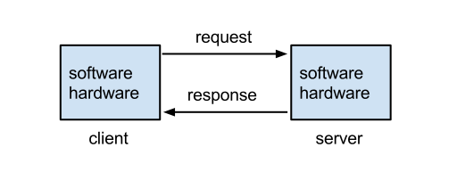
Clients send Requests - Clients are machines running software that generate network Requests that are sent to a Server.
- For ADC, Clients are usually web browsers or any other client software that generates server Requests using the HTTP protocol.
Servers Respond to Requests - Servers receive the client's Request, do some processing, and then send a Response back to the client.
- For ADC, Servers are usually web servers that receive HTTP requests from clients, perform the HTTP Method (i.e. command) contained in the request, and then send back the response.
Machines are both Clients and Servers - when a machine or program sends out a Request, that machine/program is a Client. When a machine or program receives a Request from another machine, then this machine/program is a Server. Many machines, especially ADC machines, perform both client and server functions.
- ADCs receive HTTP Requests from clients, which is a Server function. ADCs then forward the original request to a web server, which is a Client function.
What's in a Request?
Requests are sent to Web Servers using the HTTP protocol - Web Browsers use the HTTP protocol to send Requests to Web Servers. Web Servers use the HTTP protocol to send Responses back to Web Browsers. (Image from Wikimedia)
{kind=link}
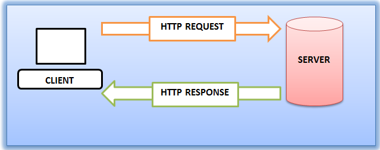
- Protocol - A protocol defines a vocabulary for how machines communicate with each other. Since web browsers and web servers use the same protocol, they can understand each other.
HTTP is an OSI Layer 7 protocol - HTTP is defined by the OSI Model as a Layer 7, or application layer, protocol. Layer 7 protocols run on top of (encapsulated in) other lower layer protocols, as detailed later. (image from Wikimedia)
{kind=link}
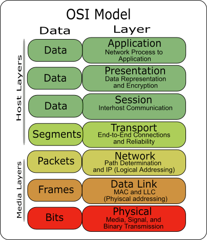
HTTP Request Commands - HTTP Requests contain commands that the web server is intended to carry out. In the HTTP Protocol, Request Commands are also known as Request Methods.
- HTTP GET Method - The most common Command in an HTTP Request is GET, which asks the web server to send back a file. In other words, web servers are file servers.
- Shown below is an HTTP Request with the first line being the GET Method. Right after the GET command is the path to the file that the browser wants to download.
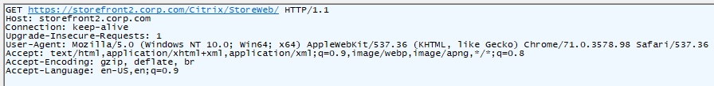
- Other HTTP Request Methods are used by clients to upload files or data to the web server and will be detailed in Part 2.
HTTP Path - Web servers can host thousands of files but Web Servers will only download one file at a time. Inside the GET Request is the path to a specific file. In HTTP, the path format is something like /directory/directory/file.html.
- The file path uses forward slashes, not backslashes, because HTTP was originally written for UNIX servers, which uses forward slashes in its file paths.
- If you enter a directory path but you don't provide a filename, then the web server will give you the configured default file for that directory instead of giving you every file in the directory.
The Path is one component of the HTTP Request URL, which looks something like https://en.wikipedia.org/wiki/Hypertext_Transfer_Protocol.
- In a Citrix ADC policy expression, you can extract the HTTP path from the HTTP Request URL by entering
HTTP.REQ.URL.PATH. - More info on URLs will be provided later in Part 2
Addresses Overview
Unique addresses - Every machine on a network has at least one address. Addresses are unique across the whole Internet; only one machine can own a particular address. If you have two machines with the same address, which machine receives the Request or Response?
Requests are sent to a Destination Address - when the client sends a request to a web server, it sends the request to the destination server's address. This is similar to email when you enter the address of the recipient. The server's address is put in the Destination Address field of the Request Packet.
- Shown below is an IP Packet (Layer 3 Packet) that contains a field for the Destination Address. (image from wikimedia)
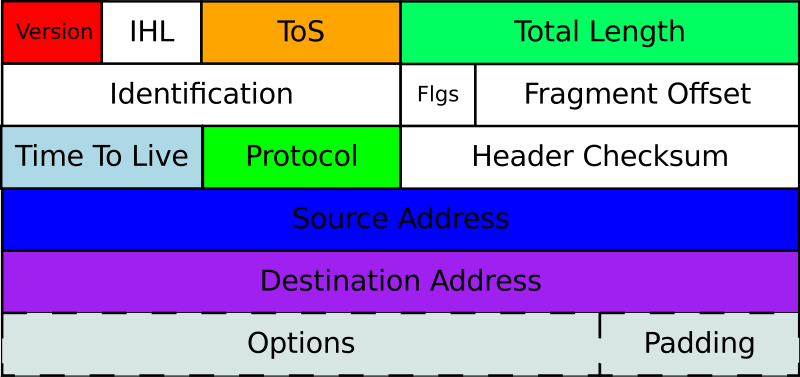
{kind=link}
The network forwards packets to the Destination Address - Request packets are placed on a Network and the Network forwards the request to the destination.
- Multiple network hops - there are usually multiple network hops between the client and the server. Each hop reads the Destination Address in the packet to know where to send the packet next. This routing process is detailed later.
Web Servers reply to the Source Address - when the Request Packet is put on the network, the client machine inserts its own address as the Source Address. The web server receives the Request and performs its processing and uses the following process to send the Response back to the client:
- The Web Server extracts the client's Source Address from the Request Packet.
- The Web Server creates a Response Packet and puts the original Source Address in the Destination Address of the Response Packet.
- The Response packet is placed on the network, which forwards the Response packet to the Response's Destination Address, which formerly was the Source Address of the Request.
Two network paths: Request path, and Response path - If you don't receive a Response to your Request, then either the Request didn't make it to the Server, or the Response never made it from the Server back to the Client. The key point is that there are two communication paths: the first is from Client to Server, and the second is from Server to Client. Either one of those paths could fail. Many ADC networking problems are in the reply/response path and not necessarily in the request path.
- Wrong Source Address - If the original Source Address in the request packet is wrong or missing, then the response will never make it back to the client. This is especially important for client devices, like ADC, that have multiple source addresses that it can choose from. If a non-reachable address is placed in the Source Address field, then the Response will never come back.
Numeric-based addresses - All network addresses are ultimately numeric, because that's the language that machines understand. Network packets contain Source address and Destination address in numeric form. Routers and other networking equipment read the numeric addresses, perform a table lookup to find the next hop to reach the destination, and quickly place the packet on the next interface to reach the destination. This operation is much quicker if addresses are numbers instead of words.
Layer-specific addresses - Different OSI layers have different layer-specific addresses, each of which is detailed later in this article:
- MAC Addresses are Layer 2 addresses.
- IP Addresses are Layer 3 addresses.
- Port numbers are Layer 4 addresses.
IP Addresses - every Client and Server on the Internet has a unique IP address. Requests are sent to a Destination IP Address. Responses are sent to the original Source IP Address. How the packets get from Source IP address to Destination IP address and back again will be detailed later.
- IP Address format - Each IP address is four numbers separated by three periods (e.g. 216.58.194.132). Each of the four numbers must be in the range between 0 and 255. Most network training guides cover IP addressing in excruciating detail so it won't repeated here. IP addressing design is inextricably linked with overall network routing design.
- Shown below is the format of IP v4 addresses. (image from wikimedia)
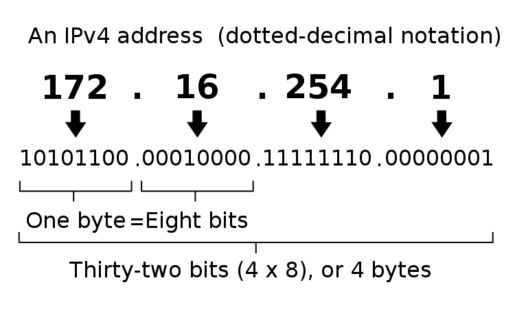
{kind=link}
Human-readable addresses - When a human enters the destination address of a Web Server, humans much prefer to enter words instead of numbers, but machines only understand numbers, so there needs to be a method to convert the word-based addresses into numeric-based addresses. This conversion process is called DNS (Domain Name System), which will be detailed later. Essentially there's a database that maps every word-based address into a number-based address. (image from wikimedia)
{kind=link}
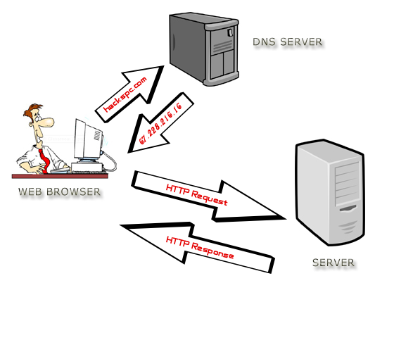
Web Servers and File Transfer
Web Servers are File Servers - essentially, Web Servers are not much more than file servers. A Web Client requests the Web Server to send it a file and the Web Server sends back a file.
Web Clients use the HTTP Protocol to request files from a Web Server. Web Servers use the HTTP Protocol to send back the requested file.
- Web Clients can be called HTTP Clients.
- Web Clients are sometimes called User Agents.
Web Clients are responsible for doing something meaningful with the files downloaded from Web Servers - Clients can do one of several things with the files downloaded from a Web Server:
- Display the file's contents to the user
- HTML files and image files are usually rendered by a browser and displayed to the user.
- Client-side apps or scripts can extract data from downloaded data files (e.g. JSON files) and then display the data in a user-friendly manner.
- Launch a program to process the file
- e.g. launch Citrix Workspace app to initiate a Citrix ICA session based on the contents of the downloaded .ica file.
- Store the file on the file system
- e.g. save the file to the Downloads folder.
Web Browsers - Web Browsers are a type of Web Client that usually want to display the files that are downloaded from Web Servers.
- HTML and CSS - HTML files are simple text files that tell a browser how to structure content that is shown to the user. Raw HTML files are not designed for human consumption. Instead, HTML files should be processed by a web rendering engine (e.g. web browser), which converts the HTML file into a human viewable format. When a non-browser, client-side program downloads a HTML file, the client-side program is able to call an API (e.g. Webview API) to render the HTML file and display it to the user. Here are the contents of a sample HTML file downloaded from a web server. Notice the <> tags. (image from Wikimedia)
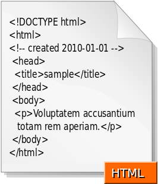
- CSS - CSS (Cascading Style Sheet) files tell Browsers how to render HTML files using a particular theme (e.g. fonts, colors).
- Images - Images are rendered by the Browser and displayed to the user. There are many different image formats and browsers need to be able to convert the image formats into graphics.
- Scripts - .js files (JavaScript) files are downloaded by the browser and executed by the browser. JavaScripts usually modify the the HTML that is shown to the user.
- Data files - Data files (e.g. JSON) are processed by JavaScript running inside the web browser.
{kind=link}
HTML vs HTTP - HTTP is a network file transfer protocol (request/response). HTML files are just one of the types of files transferred by HTTP. You'll find that most HTTP file transfers are not HTML files.
- Any program that wants to download files from a server can use the HTTP protocol. HTTP is used by far more than just web browsers.
- HTTP is the language of the cloud. Almost every communication between cloud components uses HTTP as the transfer protocol.
Other Web Client Types - other types of client programs use HTTP Protocol to download files from Web Servers:
- API Web Clients - API Web Clients (programs/scripts) can use an HTTP-based API to download data files from a web server. These data files are typically processed by a client-side script or program.
- Downloaders - some Web Clients are simply Downloaders, meaning all they do is use HTTP to download files and store them on the hard drive. Later, the user can do something with those downloaded files.
Web Server Scripting
Web Server Scripting - web servers can do more than just file serving: they can also run server-side scripts that dynamically modify the files before the files are downloaded (sent back) to the requesting web client. This allows a single web server file to provide different content to different clients. The file's content can even be retrieved from a database.
Web Server Script Languages - different web server programs support different server-side script languages. These server-side script languages include: Java, ASP.NET, Ruby, PHP, Node.js, etc.
- The Web Server runs a script interpreter for specific file types. (image from wikimedia)
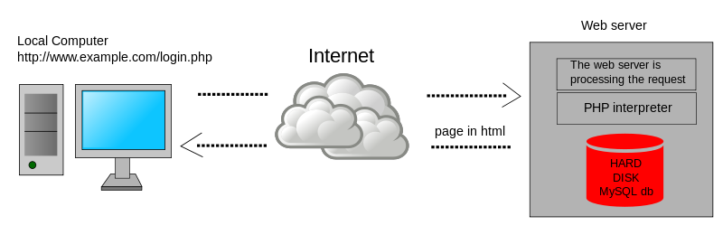
- FIle Extensions and Server-side Script Processing - When a Web Client requests a file with a specific extension (e.g. .php), the server-side PHP script engine processes the file (runs the script). Output from the script is sent as an HTTP Response. Files without the .php extension are returned as raw files. It is not possible to download the raw .php file without the script engine first processing it.
{kind=link}
Web Client Data Upload
Web Clients can include data and attachments in the HTTP Request - A Web Client sometimes needs to send data to a Web Server so the Web Server can send back a client-specific response. This client-side data is included in the HTTP request and can take one of several forms:
- URL Query String - a GET request includes a path to the file that the Web Client wants. At the end of the path, the Web Client can append arguments in the form of a URL Query String, which looks like
?arg1=value1&arg2=value2. A script on the Web Server reads this query string and adjusts the response accordingly. (image from wikipedia)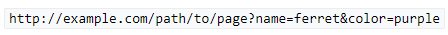
- Cookies - Web Servers frequently attach small pieces of data called Cookies to HTTP Responses. Web Clients are expected to attach these Cookies to every HTTP Request sent to the same Web Server. Cookies are used to manage Web Sessions and Web Authentication, as described later.
- JSON or XML document - client-side scripts or programs generate JSON or XML documents and send them to a Web Server. The JSON and XML documents typically contain arguments or other data that a Web Server reads to dynamically generate a response that should be sent back to the client. The response can also be a JSON or XML document and doesn't have to be an HTML document. For JSON/XML responses, the client-side program reads the response and does something programmatically with it. For example, a JavaScript Web Client can read the contents of a JSON file response and show it to the user as an HTML Table. Here's a sample JSON from Wikipedia.
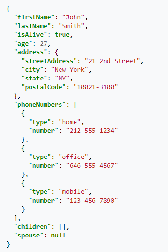
- HTML Form Data - Many HTML pages contain a form. Users enter data into the form's fields. The data that the user entered is attached to an HTTP Request and sent to the web server for processing. A very common HTML form is authentication (username and password). HTML Form Data can also be uploaded by JavaScript as JSON/XML instead of as raw HTML Form Data.
- Raw File - Sometimes a Web Client needs to upload a raw file and store it on the Web Server. The raw file is included in the HTTP Request. Users are typically prompted to select a file that the user wants to upload to the Web Server.
Web Client Scripting
Web Browser Scripting - Client-side scripts (JavaScript) add animations and other dynamic features to HTML web pages.
- Reload Web Page vs Dynamic HTML - in simple HTML pages, when the user clicks a link, the entire web page is downloaded from the Web Server and reloaded in the user's browser. In more modern HTML pages (aka Single Page Applications), when a user clicks a link or submits a form, JavaScript intercepts the request and sends the request or form data as JSON to the Web Server. The Web Server replies with a JSON document, which JavaScript uses to dynamically change the HTML shown in the user's browser. This is usually much quicker and more dynamic than fully reloading a browser's webpage.
- Web Browser Plug-ins - Additional client-side scripting languages can be added to web browsers by installing plug-ins, like Flash and Java. But today these plug-ins are becoming more rare because JavaScript can do almost everything that Flash and Java can do.
HTTP is the Core of Modern IT
Everybody working in IT today must know HTTP. Here are some IT roles where HTTP knowledge is essential:
- Server Administrators that build Web Servers or any other server-side software that use HTTP to communicate with clients.
- Database Administrators where their primary client is HTTP Web Servers that deliver HTML web pages.
- Desktop Administrators that manage and support HTTP-based client-side programs, including Web Browsers. Almost every modern client-side application uses HTTP, even if that program is not a Web Browser.
- Network Administrators that forward HTTP Requests to Web Servers and then forward the HTTP Responses back to the Web Clients.
- Security Teams that inspect the HTTP Requests and HTTP Responses for malicious content.
- Developers that write code that uses HTTP as the application's network communication protocol. This is especially true for modern API-based micro-services.
- Scripters and DevOps teams that write scripts to control other machines and applications. The scripting languages ultimately use HTTP Protocol to send commands. REST API is based on the HTTP protocol.
- Cloud Administrators since Cloud = HTTP. When an application is "written for the cloud", that means the app is based on the HTTP protocol.
- Cloud Storage is accessed using HTTP protocol instead of other storage protocols like SMB, NFS, iSCSI, and Fibre Channel.
- Mobile Device Administrators since mobile apps are nothing more than Web Clients that use HTTP protocol to communicate with web-server hosted applications.
Web Server Services and Web Server Port Numbers
Web Server Software - there are many web server programs like Microsoft IIS, Apache, NGINX, Ember (Node.js), WebLogic, etc. Some are built into the operating system (e.g. IIS is built into Windows Server), and others must be downloaded and installed.
Web Server Software runs as a Service - The Web Server Software installation process creates a Service (or UNIX/Linux Daemon) that launches automatically every time the Web Server reboots. Services can be stopped and restarted. Server admins should already be familiar with Server Services.
Servers can run multiple Services at the same time - A single Server can run many Services at the same time: an Email Server Service, an FTP Server Service, an SSH Server Service, a Web Server Service, etc. There needs to be some way for the Client to tell the Server that the Request is to be sent to the Web Server Service and not to the SSH Service.
Services listen on a Port Number - when the Web Server Service starts, it begins listening for requests on a particular Port Number (typically port 80 for unencrypted HTTP traffic, and port 443 for encrypted SSL/TLS traffic). Other Server Services listen on different port numbers. It's not possible for two Services to listen on the same port number on the same IP address.
Clients send packets to a Destination Port Number - When a Client sends an HTTP Request to a Web Server Service, the Client adds a Destination Port Number to the packet. If you open a browser and type a HTTP URL into the browser's address bar, by default, the browser will send the packet to Port 80, which is usually the port number that Web Server Services are listening on.
- Shown below is a TCP Packet Header with a field for Destination Port. (image from wikimedia)
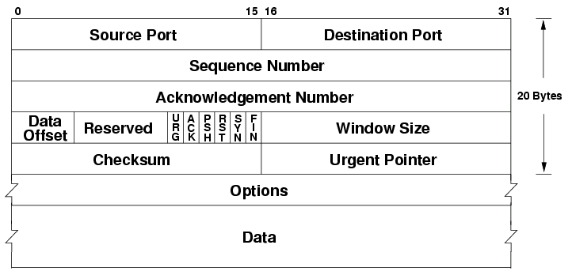
{kind=link}
Client Programs and Client Ports
Multiple Client Programs - multiple client programs can be running concurrently on a single Client machine; for example: Outlook, Internet Explorer, Chrome, Slack, etc. When the Response is sent from the Server back to the Client, which client-side program should receive the Response?
Client Ephemeral Ports - whenever a client program sends a request to a Server, the operating system assigns a random port number between 1024 and 65535 to the client process. This range of ephemeral client port numbers varies for different client operating systems.
- Windows ephemeral (dynamic) ports are usually between 49152 and 65535. For details, see Microsoft 929851.
Servers send the Response to the Client's Ephemeral Port - The Client's Ephemeral Port is included in the Source Port field of the Request packet. The Server extracts the Source Port from the Request Packet and puts the original source port in the Response packet's Destination Port field.
- If you view Requests and Responses in a network trace, you'll see that the port numbers are swapped for responses vs requests.
Each Client Request can use a different Ephemeral Port - A client program can send multiple requests to multiple server machines, and each of these outstanding requests can have a unique Client Ephemeral port.
Summary of the Network Packet Fields discussed so far - In order for Packets to reach the Server Service and return to the Client Program, every network packet must contain the following fields:
- Destination IP Address - the Server's IP address
- Destination Port - port 80 or port 443 for Web Server Services
- Source IP Address - the Client's IP address
- Source Port - the ephemeral port assigned by the operating system to the client program
Sessions
Sessions Overview
Single Request vs Session - One HTTP Request is accompanied by one HTTP Response. But you usually need to combine multiple HTTP Requests and Responses into something called a Session. For example, if you authenticated to a web server, you shouldn't have to authenticate every HTTP Request that you send to the Web Server. After authentication is complete, an HTTP Session is established which allows multiple HTTP Requests and Responses to use the same authentication context.
Session Context - Context is the data that defines a session. The first HTTP Response includes a session identifier, which is usually in a cookie. This session identifier (e.g. cookie) is included with the next HTTP Request so the Web Server knows which session is being used. The Web Server looks up the existing context information so it doesn't have to start over (e.g. re-authenticate the user).
Sessions and the OSI network model - each layer of the OSI network model has its own conception of sessions, but the idea is the same: a session = multiple requests/responses in the same context.
Here are the Session constructs for each layer of the OSI network model:
- Layer 4 - TCP Connection
- Layer 6 - SSL/TLS Session
- Layer 7 - HTTP Session
- Web Server Session - doesn't map to the OSI Model. Think "shopping carts"
The OSI model is detailed in every introductory network training book/video/class. In essence, application traffic starts at Layer 7 (HTTP Protocol), which is embedded down the stack inside the Layer 6 packet (typically SSL/TLS encrypted session), then embedded down the stack again into a Layer 4 TCP packet. When the packet is received at the destination, Layer 4 is removed revealing Layer 6. Then Layer 6 is removed revealing Layer 7, which is finally given to the application or service.
Higher layer sessions require lower layer sessions - Sessions at higher layers require Sessions (or Connections) at lower layers to be established first. For example, HTTP Requests can't be sent unless a TCP Connection is established first.
Session management offloading - Some of the session handling tasks performed by servers can be offloaded to an ADC appliance. For example, Citrix ADC can handle all of the client-side TCP Connections and client-side TLS/SSL encryption sessions so the Web Servers can focus on serving content instead of managing sessions.
Network Sessions
Transport Protocol - TCP (Layer 4) is a Transport Protocol. TCP does a number of things, including the following:
- Reorder packets that arrive out of order.
- When a Request or Response is broken into multiple packets, the destination needs to reassemble the packets in the correct order. Each packet contains a Sequence Number. The first packet might have Sequence Number 1, while the second packet might have Sequence Number 2, etc. These Sequence Numbers are used to reassemble the packet in the correct order.
- The destination acknowledges every packet that it receives so the source knows that the packet arrived at the destination. If the source does not receive an acknowledgement, then the source will retransmit.
- Acknowledging every packet introduces delay (latency) so TCP uses a dynamically-sized Window to allow the source to send multiple packets before it receives an acknowledgement.
- Error checking
- Every TCP packet includes a checksum that was computed at the source. If the computed checksum on the received packet does not match the checksum inside the packet, then the packet is dropped and no acknowledgement is sent to the sender. Eventually the sender will retransmit the missing/corrupted packet.
- If congestion, the source needs to back off.
- TCP has several algorithms for handling congestion. These algorithms control how the Windows size grows and shrinks, and also controls how often acknowledgements are sent.
TCP and UDP Overview - there are two Layer 4 Session protocols - TCP, and UDP. TCP handles many of the Transport services mentioned above. UDP does not do any of these services, and instead requires higher layer protocols to handle them.
- Citrix EDT (Enlightened Data Transport) is an example higher layer protocol that runs on top of UDP because EDT doesn't want TCP to interfere with the EDT's Transport services (reassembly, retransmission, etc.). In other words, Citrix EDT replaces the transport capabilities of TCP.
- HTTP/3 (version 3) also replaces TCP with its own transport layer and thus HTTP/3 runs on top of UDP instead of TCP.
- The problem with TCP is that it is a generic transport protocol that isn't specifically designed for specific higher-level protocols like HTTP and Citrix ICA.
TCP Port Numbers and UDP Port Numbers are different - Each Layer 4 protocol has its own set of port numbers. TCP port numbers are different from UDP port numbers. A Server Service listening on TCP 80 does not mean it is listening on UDP 80. When talking about port numbers, you must indicate if the port number is TCP or UDP, especially when asking firewall teams to open ports. Most of the common ports are TCP, but some (e.g. Voice) are UDP.
- Increasingly, you will need to open both UDP and TCP versions of each port number. For example, Citrix HDX/ICA traffic can run on both TCP 1494 and UDP 1494 (EDT protocol). ICA traffic proxied through Citrix Gateway can use both TCP 443 and UDP 443.
TCP Protocol (Layer 4)
HTTP requires a TCP Connection to be established first - When an HTTP Client wants to send an HTTP Request to a web server, a TCP Connection must be established first. The Client and the Server do the three-way TCP handshake on TCP Port 80. Then the HTTP Request and HTTP Response is sent over this TCP connection. HTTP is a Layer 7 protocol, while TCP is a Layer 4 protocol. Higher layer protocols run on top of lower layer protocols. It is impossible to send a Layer 7 Request (HTTP Request) without first establishing a Layer 4 session/connection.
TCP Three-way handshake - Before two machines can communicate using TCP, a three-way handshake must be performed:
- The TCP Client initiates the TCP connection by sending a TCP SYN packet (connection request) to the Server Service Port Number.
- The Server creates a TCP Session in its memory, and sends a SYN+ACK packet (acknowledgement) back to the TCP client.
- The TCP Client receives the SYN+ACK packet and then sends an ACK back to the TCP Server, which finishes the establishment of the TCP connection. HTTP Requests and Responses can now be sent across this established TCP connection.
TCP Connections are established between Port Numbers - The TCP Connection is established between the Client's TCP Port (ephemeral port), and the Server's TCP Port (e.g. port 80 for web servers). Different port numbers on either side means different TCP Connections.
- TCP Connections run on top of Layer 3 IP traffic. Layer 3 traffic uses an IP Address for the source and an IP address for the destination. If either of these addresses are different, then that's a different TCP Connection.
- In summary, each combination of Source IP, Destination IP, Source Port, and Destination Port is a different TCP Connection.
Multiple Clients to one Server Port - A single Server TCP Port can have many TCP Connections with many clients. Each combination of Client Port/Client IP with the Server Port is considered a separate TCP Connection. You can view these TCP Connections by running netstat on the server.
- Netstat shows Layer 4 only - netstat command shows the TCP connection table (Layer 4) only. Netstat does not show HTTP Requests (Layer 7).
- Netstat show TCP connections but not UDP - There's no such thing as a UDP Connection, so Netstat will not show them. However, Netstat can show you any services that are listening on UDP port numbers.
TCP Connection Termination - clients that are done communicating with a server can send a TCP Finish packet that tells the server to delete the TCP connection information from the server's memory (TCP connection table).
- TCP Connection time limit - If the client never sends a Finish packet, then servers have a default time limit for inactive TCP connections. Once that time limit expires. the server will send a Finish packet to the client and then remove the TCP connection from its memory. If the client later wants to send an HTTP Request, then the client must first perform the three-way TCP handshake again.
TCP and Firewalls - Firewalls watch for TCP handshake packets. For every SYN packet allowed through the firewall, the firewall opens a port in the opposite direction so the SYN+ACK packet can be sent back to the client. This means firewall administrators do not have to explicitly permit reply traffic since the firewall will do it automatically.
Use Telnet to verify that a Service is listening on a TCP Port number - when you telnet to a server machine on a particular port number, you are essentially completing the three-way TCP handshake with a particular Server Service. This is an easy method to determine if a Server machine has a Service listening on a particular port number and that you're able to communicate with that port number.
- Telnet doesn't work with UDP services because there's no three-way handshake for UDP.
TCP Three-way handshake can be expensive - TCP handshakes and TCP session management require CPU, memory, and bandwidth on the web servers. For web servers that serve content to thousands of clients, TCP session management can consume a significant portion of the web server's hardware resources.
- Citrix ADC can offload TCP session management - Citrix ADC handles all of the TCP sessions between the thousands of clients and the one Load Balancing VIP. Citrix ADC then opens a single TCP session between the ADC and the Web Server. All HTTP requests received by the ADC's clients are sent across the single web server TCP session, even if the HTTP Requests came from multiple client TCP connections. This means that an ADC might have thousands of client-side TCP connections but only one server-side TCP connection, thus offloading TCP duties from the web server.
- HTTP/2 Multiplexing - In HTTP 1.1, when an HTTP Request is sent across a TCP session, no other HTTP Request can be sent until the web server sends back a response for the original HTTP Request. In HTTP/2, multiple HTTP Requests can be multiplexed onto the same TCP connection and the web server will reply to all of them when it can.
- In HTTP 1.1, ADC will open as many TCP connections to the web server as needed to support multiple concurrent HTTP requests. HTTP/2 should only need a single TCP connection for all HTTP requests.
UDP Protocol (Layer 4)
UDP is Sessionless - UDP is a much simpler protocol than TCP. For example, there's no three-way handshake like TCP. Since there's no handshake, there's no UDP session.
- Notice in the UDP header that there are no Sequence number fields, no Acknowledgement number fields, and no Window size field like there is in TCP. (image from wikipedia)
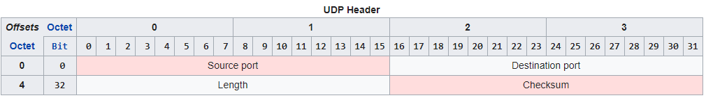
No Sequence Numbers - UDP packets do not contain sequence numbers. If packets arrive out of order, UDP cannot determine this, and cannot reassemble them in the correct order.
No acknowledgements - When UDP packets are received, the receiver does not send an acknowledgement back to the sender. Since there are no acknowledgements, if a UDP packet is lost, there's no way for the UDP sender to detect this and thus no way for UDP to resend the packet like TCP does.
- Audio uses UDP - For audio traffic, there's usually no point in resending lost packets. Getting rid of retransmissions makes UDP more efficient (less bandwidth, less latency) than TCP for audio.
Why UDP over TCP? - TCP session information is contained in every TCP packet, thus making every TCP packet (20 byte header) bigger than a UDP packet (8 byte header). The smaller header size and the lack of three-way handshake means UDP is a lightweight protocol that performs better on high latency and low bandwidth links.
- However, some of the transport services provided by TCP are needed by Layer 7 protocols. New transport protocols are being developed to replace TCP. These new transport protocols need to do their work without TCP interfering with them so the new transport protocols run on top of UDP instead of TCP.
- Citrix EDT (Enlightened Data Transport) is an example UDP-based transport protocol. HTTP/3 has its own transport protocol that will also run on top of UDP instead of TCP.
HTTP Basics
HTTP Protocol Overview
URLs - when a user wants to visit a website, the user enters a URL into a web browser's address bar. An example URL is https://en.wikipedia.org/wiki/URL. Each URL can be broken up into three sections:
- URL Scheme = https:// or http:// - the first part of the URL, also known as the scheme, specifies the Layer 7 and Layer 6 protocols that the browser will use to connect to the web server.
- HTTP Protocol can be transmitted unencrypted, which is the http:// scheme. The http:// scheme defaults to TCP Port 80.
- Encrypted HTTP traffic means regular unencrypted Layer 7 HTTP packets embedded in a Layer 6 SSL/TLS session. HTTP Encryption is detailed in Part 2. Users enter https:// scheme to indicate that the user wants the HTTP traffic to be encrypted, assuming the Web Server is configured to accept encrypted traffic. The https:// scheme defaults to TCP Port 443.
- URL Hostname = en.wikipedia.org - the second part of the URL is the human-readable DNS host name that translates to the web server's IP address. The hostname comes after the scheme but before the URL Path.
- The Web Browser uses DNS to convert the URL host name into an IP Address for the web server.
- The Web Browser creates a TCP connection to the web server's IP Address on port 80 or port 443.
- URL Path = /wiki/URL - the remaining part of the URL is the Path and Query. The Path indicates the path to the file that you want to download.
- The Web Browser sends an HTTP GET Request for the specified path to the web server across the already established TCP connection.
Browser handling of URLs - The Browser performs different actions for each portion of the URL:
- Browser uses the URL Scheme to define how the browser connects to the URL Host name.
- Browser uses the URL Host name as the destination for the TCP Connection and the HTTP Requests.
- The Web Browser includes the entered URL Host name in the Host header of each HTTP Request Packet sent to the web server so that the web server knows which web site the user is trying to access. The HTTP Request Host header is detailed in Part 2.
- Browser includes the URL Path in the GET method of the initial HTTP Request Packet.
- For the example URL shown above, the first line of the HTTP Request packet is this: GET /wiki/URL
Why forward slashes in URLs? - Web Server programs were originally developed for UNIX and Linux, and thus URLs share some of the characteristics of Linux/UNIX.
- Some URLs are case sensitive - Since UNIX/Linux is case sensitive, file paths in URLs are sometimes case sensitive. This is more likely to be true for Web Server software running on UNIX/Linux machines than Windows machines.
HTTP Packet
HTTP Request Method - at the top of every HTTP Request packet is the HTTP Method or Request Command. This Method might be something like this: GET /Citrix/StoreWeb/login.aspx HTTP/1.1 
- GET is a simple request to fetch a file.
- If no URL path is specified, then the first line of the HTTP Request is simply
**GET / HTTP/1.1**where the / means that it's requesting the default file in the root folder of the website. Web Servers are configured to return a default file if no specific file is requested. - There are other HTTP request methods, like POST, PUT, DELETE, etc. These other HTTP Request Methods are used in REST APIs, JavaScript, and HTML Form Uploads and are partially detailed in Part 2.
HTTP Response Code - at the top of every HTTP Response is a code like this: HTTP/1.1 200 OK. Different codes mean success or error. Code 200 means success. You'll need to memorize many of these codes.
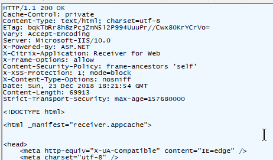
Header and Body - HTTP Packets are split into two sections: header, and body.
- HTTP Headers - Below the Request Method or below the HTTP Response Code, are a series of Headers. Web Browsers insert Headers into requests. Web Servers insert Headers into responses. Request Headers and Response Headers are totally different. You'll need to memorize most of these Headers.
- HTTP Body - Below the Headers is the Body. Not every HTTP Packet has a Body.
- In a HTTP Response, the HTTP Body contains the actual downloaded file (e.g. HTML file).
- HTTP GET Requests do not have a Body.
- HTTP POST Requests have a Body. The HTTP Body can contain data (HTML Form Data, JSON, XML, raw file, etc.) that is uploaded with the Request.
Raw HTTP packets - To view a raw HTTP packet, use your browser's developer tools (F12 key), or use a proxy program like Fiddler. In a Browser's Developer Tools, switch to the Network tab to see the HTTP Requests and HTTP Responses.
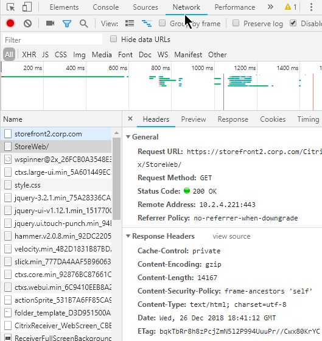
Multiple HTTP requests - A single webpage requires multiple HTTP requests. When an HTML file is rendered by a Web Browser, the HTML file contains links to supporting files (CSS files, script files, image files) that must be downloaded from the web server. Each of these file downloads is a separate HTTP Request.
- HTTP and TCP Connections - Every HTTP Request requires a TCP Connection to be established first. Older Web Servers tear down the TCP Connection after every single HTTP Request. This means that if a web page needs 20 downloads, then 20 TCP Connections, including 20 three-way handshakes, are required. Newer Web Servers keep the TCP Connection established for a period of time, allowing each of the 20 HTTP Requests to be sent across the existing TCP Connection.
HTTP Redirects - one HTTP Response Code that you must understand is the HTTP Redirect.
- Redirect Behavior - When a HTTP Client sends an HTTP Request to a Web Server, that Web Server might send back a 301/302 Redirect and include a new location (new URL). The HTTP Client is then expected to send a HTTP Request to the new Location (URL) instead of the old URL.
- Redirect HTTP Response - HTTP Response packets for a Redirect have response code 301 or 302 instead of response code 200.
- The HTTP Response Header named Location identifies the new URL that the browser is expected to navigate to.
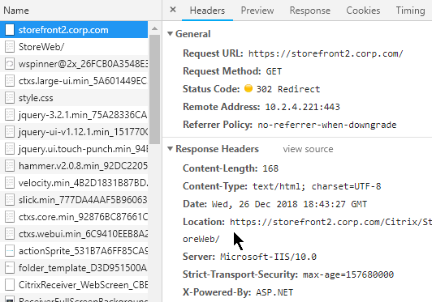
- The HTTP Response Header named Location identifies the new URL that the browser is expected to navigate to.
- Redirect usage - Redirects are used extensively by web applications. Most web-based applications would not function without redirects. A common usage of Redirects is in authenticated websites where an unauthenticated user is redirected to a login page, and after login, the user is redirected back to the original web page. Or a redirect can redirect you to a default page (e.g. redirect to "/Director")
- Not all HTTP Clients support HTTP Redirects - Web Browsers certainly can perform a redirect. However, other HTTP Clients (e.g. Citrix Receiver) do not follow Redirects.
Additional HTTP concepts will be detailed in Part 2.
Networking
Layer 2 (Ethernet) and Layer 3 (Routing) Networking
Subnet - all machines connected to a single "wire" are on the same subnet. Machines on the subnet can communicate directly with other machines on the same subnet. When one machine puts electrical signals on the wire, every other machine on the same wire sees the electrical signals. A network packet (or frame) is a collection of electrical signals.
Routers - If two machines are on different subnets, then those two machines can only communicate with each other through an intermediary device that is connected to both subnets. This intermediary device is called a router. The router is connected to both subnets (wires) and can take packets from one subnet and put them on the other subnet.
Layer 2 - When machines on the same subnet want to communicate with each other, they use a Layer 2 protocol, like Ethernet.
Layer 3 - When machines on different subnets want to communicate with each other, they use a Layer 3 protocol, like IP (Internet Protocol).
Local IP address vs remote IP address
Destination is either local or remote - since different protocols are used for intra-subnet (Layer 2) and inter-subnet (Layer 3), the machines need to know which machines on are on the local subnet, and which machines are on a remote subnet.
IP Address Subnet Mask - all machines have an IP address. All machines are also configured with a subnet mask. The subnet mask defines which bits of the machine's IP address are the subnet ID and which bits of the IP address are the machine's host ID. If two machines have the same subnet ID, then those two machines are on the same subnet. If two machines have different subnet IDs, then those two machines are on different subnets.
- IPv4 addresses are 32-bits in length. The left part of the address is the subnet ID. The right part of the address is the machine's host ID. The subnet mask designates where the left part (subnet ID) ends and the right part (host ID) begins. If the subnet mask is 24 bits, then the first 24 bits of the IP address are the subnet ID, and the last 8 bits are the machine's host ID.
- The subnet mask is usually between 8 bits and 30 bits. The variability of subnet mask length allows a router to aggregate many smaller subnet IDs into one larger subnet ID and thus improve router efficiency.
- IPv6 changes how subnet ID and host ID are determined. IPv6 addresses are 128-bits in length. The subnet ID is the first 64 bits, and the host ID is the last 64 bits, which means the subnet mask is 64 bits. Routers still have the flexibility of reducing the subnet mask to less than 64 bits so multiple small subnets can be aggregated into one larger subnet. However, the host ID is always 64 bits.
- For example, if a machine with address 10.1.0.1 wants to talk to a machine with address 10.1.0.2, and if the subnet mask is 255.255.0.0, when both addresses are compared to the subnet mask, the masked results are the same, and thus both machines are on the same subnet, and Ethernet is used for the communication.
- If the masked results are different, then the other machine is on a different subnet, and IP Routing is used for the communication.
- There is a considerable amount of readily available training material on IP Addressing and subnet masks so I won't repeat that material here.
Wrong Subnet Mask - If either machine is configured with the wrong subnet mask, then one of the machines might think the other machine is on a different subnet, when actually it's on the same subnet. Or one of the machines might think the other machine is on the same subnet, when actually it's on a different subnet. Remember, communication in the same same subnet uses a different communication protocol than between subnets and thus it's important that the subnet mask is configured correctly.
Layer 2 Ethernet communication
Every machine sees every packet - A characteristic of Layer 2 (Ethernet) is that every machine sees electrical signals from every other machine on the same subnet.
MAC addresses - When two machines on the same subnet talk to each other, they use a Layer 2 address. In Ethernet, this is called the MAC address. Every Ethernet NIC (network interface card) in every machine has a unique MAC address. Ipconfig shows it as the NIC's Physical Address.
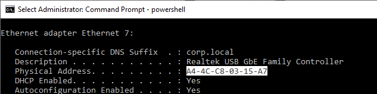
NICs Listen for their MAC address - The Ethernet packet (electrical signals) put on the wire contains the MAC address of the destination machine. All machines on the same subnet see the packet. If the listening NIC has a MAC address that matches the packet, then the listening NIC processes the rest of the packet. If the listening NIC doesn't have a matching MAC address, then the packet is ignored.
- You can override this ignoring of packets not destined to the NIC's MAC address by turning on the NIC's promiscuous mode, which is used by packet capture programs (e.g. Wireshark) to see every packet on the wire.
Source MAC address - When an Ethernet packet reaches a destination machine, the destination machine needs to know where to send back the reply. Thus both the destination MAC address, and the source MAC address, are included in the Ethernet packet.
- Shown below is an Ethernet Frame with Destination MAC Address and Source MAC Address. (image from wikimedia)
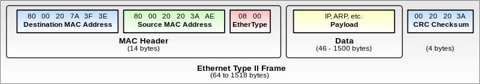
{kind=link}
Ethernet Packet Fields - In summary, a typical Ethernet packet/frame with embedded IP packet and embedded Layer 4 packet contains the following fields:
- Destination MAC address
- Source MAC address
- Destination IP address
- Source IP address
- Destination TCP/UDP port number
- Source TCP/UDP port number
Other Layer 2 technologies - another common Layer 2 technology seen in datacenters is Fibre Channel for storage area networking (SAN). Fibre Channel has its own Layer 2 addresses called the World Wide Names (WWN). Fibre Channel does not use IP in Layer 3, and instead has its own Layer 3 protocol, and its own Layer 3 addresses (FCID).
ARP (Address Resolution Protocol)
Users enter IP Addresses, not MAC Addresses - when a user wants to communicate to another machine, the user enters a DNS name, which is translated to an Layer 3 IP address. If the destination IP address is on the same subnet as the source machine, then the destination IP address must first be converted to a Layer 2 MAC address. Remember, same-subnet (same wire) Layer 2 communication uses MAC addresses, not IP addresses.
- Machines use the IP address Subnet Mask to determine if the destination IP address is local (same subnet) or remote.
Machines use Address Resolution Protocol (ARP) to find the MAC address that's associated with a destination IP address that's on the same subnet as the source machine.
ARP Process - The source machine sends out an Ethernet broadcast with the ARP message "who has IP address 10.1.0.2". Every machine on the same subnet sees the message. If one of the machines is configured with IP address 10.1.0.2, then that machine replies to the source machine and includes its MAC address in the response. The source machine can now send a packet directly to the destination machine's Ethernet MAC address.
ARP Cache - after the ARP protocol resolves an IP address to a MAC address, the MAC address is cached on the source machine for a period of time (e.g. 30 seconds). If another IP packet needs to be sent to the same destination IP address, then there's no need to perform ARP again, since the source machine already knows the destination machine's MAC address. When the ARP cache entry expires, then ARP needs to be performed again.
IP Conflict - a particular IP address can only be assigned to one machine. If two machines have the same IP address, then both machines will respond to the ARP request. Sometimes the ARP response will be one machine's MAC address, and sometimes it will be the other machine's MAC address. This behavior is typically logged as a "MAC move" or an "IP conflict". Since only half the packets are reaching each machine, both machines will stop working.
Layer 3 on top of Layer 2
Routing to other subnets - When a machine wants to talk to a machine on a different subnet, the source machine needs to send the packet to a router. The router will then forward the packet to the destination machine on the other subnet.
Default gateway - Every client machine is configured with a default gateway, which is the IP address of a router on the same subnet as the client machine. The client machine assumes that the default gateway (router) can reach every other subnet.
- On a ADC or UNIX/Linux device, the default route (default gateway) is shown as route 0.0.0.0/0.0.0.0.
Router's MAC address - Since the router and the source machine are physically connected to the same Ethernet subnet, they use Ethernet MAC addresses to communicate with each other. The source machine first ARP's the router's IP address to find the router's MAC address. The source machine creates a packet with the remote destination IP address and the router's local MAC address, and then puts the packet on the wire.
- The Destination IP Address in the packet is the final destination's (the web server's) IP address, and not the Router's IP address. However, the destination MAC Address is the Router's MAC address, and not the final destination's MAC Address.
- ARP across subnet boundaries - It's not possible for a source machine to find the MAC address of a machine on a remote subnet. If you ping an IP address on a remote subnet, and if you look in the ARP cache, you might see the router's MAC address instead of the destination machine's MAC address. Routers do not forward Ethernet broadcasts to other subnets.
- Router must be on same subnet as client machine - since client machines use Ethernet, ARP, and MAC addresses to talk to routers, the router (default gateway) and the client machine must be on the same subnet. More specifically, the router must have an IP address on the same IP subnet as the client machine. When the client machine's IP address and the router's IP address are compared to the subnet mask, the subnet ID results must match. You cannot configure a default gateway that is on a different subnet than the client machine.
- There can only be one default route on a machine, which impacts multi-NIC machines - Some machines (e.g. ADC appliances) might be configured with multiple IP addresses on multiple subnets and multiple physical connections. Only one router can be specified as the default gateway (default route). This default gateway must be on one of the subnets that the client machine is connected to. Keep reading for details on how to handle the limitation of only a single default route.
Routing table lookup - When the router receives the packet on the MAC address of one of its NICs, and if the destination IP address in the packet is not one of the router's IP addresses, then the router looks in its memory (routing table) to determine what network interface it needs to put the packet on. The router has a list of which IP subnet is on which router interface.
Router ARP's the destination machine on other subnet - If the destination IP address is on one of the subnets/interfaces that the router is directly connected to, then the router will perform an ARP on that subnet/interface to get the destination machine's MAC address. If the router is not directly connected to the subnet that contains the destination IP address, then the router will probably send the packet to another router for additional routing.
The Router makes a couple changes to the packet before it puts the modified packet on the destination interface. Here are the modifications:
- The destination MAC address is changed to the destination machine's MAC address instead of the router's MAC address.
- The source MAC address in the packet is now the router's MAC address, thus making it easier for the destination machine to send back a reply.
- The IP Addresses in the packet do not change. Only the MAC addresses change.
Multiple Routers and Routing Protocols
Router-to-router communication- When a router receives a packet that is destined to a remote IP subnet, the router might not be Layer 2 (Ethernet) connected to the destination IP subnet. In that case, the router needs to send the packet to another router. It does this by changing the destination MAC address of the packet to a different router's MAC address. Both routers need to be connected to the same Ethernet subnet.
Routing Protocols - Routers communicate with each other to build a topology of the shortest path or quickest path to reach a destination IP subnet. Most of the CCNA/CCNP/CCIE training materials detail how routers perform this topology building and path selection and thus will not be detailed here.
- ADC appliances can participate in routing protocols like OSPF and BGP. ADC can inject routes for IP destinations that only the ADC appliance might know about.
Ethernet Switches
Ethernet Subnet = Single wire - All machines on the same Ethernet subnet share a single "wire". Or at least that's how it used to work.
Switch backplane - Today, each machine connects a cable to a port on a switch. The switch merges the switch ports into a shared backplane. The machines communicate with each other across the backplane instead of a single "wire".
MAC address learning - The switch learns which MAC addresses are on which switch ports.
Switches switch known MAC addresses to only known switch ports - If the switch knows which switch port connects to the destination MAC address of an Ethernet packet, then the switch only puts the Ethernet packet on the one switch port. This means that Ethernet packets are no longer seen by every machine on the wire. This improves security because NIC promiscuous mode no longer sees every packet on the Ethernet subnet.
- SPAN port - For troubleshooting or security monitoring, sometimes you need to see every packet. Switches have a feature called SPAN or Port Mirroring that can mirror every packet from one or more source interfaces to a single destination interface where a packet capture tool is running.
Switches flood unknown MAC addresses to all switch ports - If the switch doesn't know which switch port connects to a destination MAC address, then the switch floods the packet to every switch port on the subnet. If one of the switch ports replies, then the switch learns the MAC address on that switch port.
Switches flood broadcast packets - The switch also floods Ethernet broadcast packets to every switch port in the Ethernet subnet.
Switches and VLANs
VLANs - A single Ethernet Switch can have different switch ports in different Ethernet Subnets. Each Ethernet Subnet is called a VLAN (Virtual Local Area Network). All switch ports in the same Ethernet Subnet are in the same VLAN.
VLAN ID - Each VLAN has an ID, which is a number between 1 and 4095. Thus a Switch can have Switch Ports in up to 4095 different Ethernet Subnets.
Switch Port VLAN configuration - a Switch administrator assigns each switch port to a VLAN ID. By default, Switch Ports are in VLAN 1 and shutdown. The Switch administrator must specify the port's VLAN ID and enable (unshut) the Switch Port.
Pure Layer 2 Switches don't route - When a Switch receives a packet for a port in VLAN 10, it only switches the packet to other Switch Ports that are also in VLAN 10. Pure Layer 2 Switches do not route (forward) packets between VLANs.
Some Switches can route - Some Switches have routing functionality (Layer 3). The Layer 3 Switch has IP addresses on multiple Ethernet subnets (one IP address for each subnet). The client machine has the Default Gateway set to the Switch's IP address that's in the same subnet as the client. When Ethernet packets are sent to the Switch's MAC address, the Layer 3 Switch forwards (routes) the packets to a different IP subnet.
DHCP (Dynamic Host Configuration Protocol)
Static IP Addresses or DHCP (Dynamic) IP Addresses - Before a machine can communicate on an IP network, the machine needs an IP address. The IP address can be assigned statically by the administrator, or the machine can get an IP address from a DHCP Server.
DHCP Process - When a DHCP-enabled machine boots, it sends a DHCP Request broadcast packet asking for an IP address. A DHCP server sees the DHCP IP address request and sends back a DHCP reply with an IP address in it.
- Avoid IP Conflicts - DHCP servers keep track of which IP addresses are available. Before the IP address is returned to a DHCP Request, some DHCP servers will ping the candidate IP address to make sure it doesn't reply.
- Multiple DHCP Responses - if a DHCP Client machine receives multiple DHCP Responses from multiple DHCP Servers, then the DHCP Client machine will accept and acknowledge the first response. The other unacknowledged responses will time out and their candidate IP addresses will be returned to the IP Address pools.
- DHCP Lease Expiration - DHCP-issued addresses are only valid for a period of time (days). Before the expiration time, the DHCP Client asks the DHCP Server to renew the lease expiration time for the issued IP Address. If the timer expires, then the previously issued IP Address is returned to the DHCP pool.
- Short Lease for Non-persistent machines - If you are building and tearing down many machines (e.g. non-persistent virtual desktops) quickly, then you want the DHCP Lease time to be short, usually one hour. That way IP addresses from deleted machines are quickly returned to the DHCP Pool.
DHCP Requests don't cross routers - The DHCP Request broadcast is Layer 2 (Ethernet) only, and won't cross Layer 3 boundaries (routers).
- DHCP Server on same subnet as DHCP Client - If the DHCP server is on the same subnet as the DHCP client, then the DHCP Server will see the DHCP Request and reply to it. But this is rarely the case.
- DHCP Server on subnet that's remote from DHCP Client - If the DHCP server is on a different subnet than the client, then the local router needs to forward the DHCP request to the remote DHCP server. DHCP Request Forwarding is not enabled by default and must be configured by a router administrator. Cisco routers call the feature IP Helper Address or DHCP Proxy/Fowarder.
- Forward to Multiple DHCP Servers - the router administrator specifies the IP addresses of the remote DHCP Servers. Make sure they configure more than one DHCP Server to forward to.
- DHCP Request Forwarding in datacenters - DHCP Request Forwarding is usually not enabled in datacenter subnets. However, DHCP is usually required for virtual desktops and non-persistent RDSH servers. In a Citrix or VDI implementation, you typically ask the datacenter network team to create new subnets (new VLANs) so DHCP can be enabled on those new VLANs without affecting existing subnets.
- Citrix Provisioning Servers can host DHCP Server - if you have Citrix Provisioning Target Devices (VDAs) and Citrix Provisioning Servers on the same datacenter subnet, then you can avoid router DHCP configuration by simply installing DHCP Server on the Citrix Provisioning Servers.
DHCP Scopes - A single DHCP server can hand out IP addresses to multiple subnets. Each subnet is a different DHCP Scope. When routers forward DHCP Requests to a DHCP Server, the forwarded Request contains the client's IP subnet info so the DHCP Server knows which DHCP Scope the issued IP address should come from.
DHCP Scope Options - DHCP Servers can include additional address configuration data in their IP Address responses. Commonly configured additional address configuration data includes: default gateway IP address, DNS server IP addresses, DNS Search Suffix (see below), etc.
- Subnet-specific - Some of these items, like Default Gateway, are subnet specific, so each DHCP Scope is configured with different Scope Options.
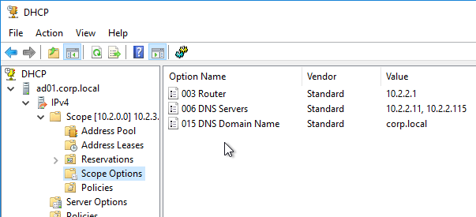
- Global - Some data, like DNS Server addresses, apply to all scopes and thus are configured as Global DHCP Scope Options. Scope-specific DHCP Scope Options override Global DHCP Scope Options.
DHCP Database - DHCP scope configuration and the list of DHCP-issued IP addresses are stored in a DHCP database on each DHCP Server.
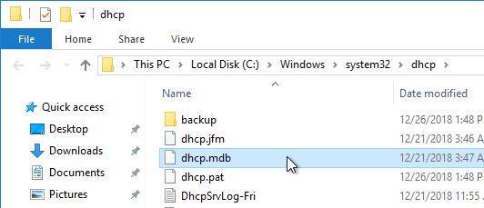
DHCP Server Redundancy - If the DHCP Server is down, then DHCP Clients cannot get an IP address when they boot, and thus can't communicate on the network. You typically need at least two DHCP Servers.
- DHCP Database Replication - If there are multiple DHCP Servers, then the DHCP database must be replicated. Windows Server 2012 and newer have a DHCP Scope (i.e. Database) replication capability. As do other DHCP servers like Infoblox.
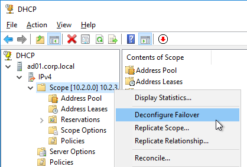
- Split Scope - If the DHCP Database is not replicated, then configure each DHCP Server with different IP Address Pools to ensure that there aren't two DHCP Servers giving out the same IP addresses. You can take a large pool of addresses and split the pool across the DHCP Servers.
DNS (Domain Name Server)
DNS converts words to numbers - When users use a browser to visit a website, the user enters a human-readable, word-based address. However, machines can't communicate using words, so these words must first be converted to a numeric address. That's the role of DNS.
DNS Client - Every client machine has a DNS Client. The DNS Client talks to DNS Servers to convert word-based addresses (DNS names) into number-based addresses (IP addresses).
DNS Query - The DNS Client sends a DNS Query containing the word-based address to a DNS Server. The DNS Server sends back an IP Address. The client machine then connects to the IP Address. (image from Wikimedia)
{kind=link}
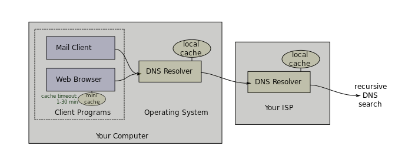
DNS and Traffic Steering - DNS Servers have much leeway in how they choose an IP address to return in response to a DNS Query.
- DNS Servers can be simple static databases, where the same IP address response is given every time a Query is received for a particular DNS name.
- Or DNS Servers can be dynamic where the DNS Servers gives out different IP addresses depending on IP reachability and the client's proximity to the IP address.
DNS Servers play an important role in Traffic Steering (aka Intelligent Traffic Management) by giving out different IP addresses based on network conditions. On Citrix ADC, the GSLB (Global Server Load Balancing) feature performs DNS Traffic Steering.
Do not overlook the importance of DNS when troubleshooting an HTTP Client connectivity problem.
DNS Servers configured on client machine - On every client machine, you specify which DNS Servers the DNS Client should use to resolve DNS names into IP addresses. You enter the IP addresses of two or more DNS Servers.
- DHCP can deliver DNS Server addresses - These DNS Server IP addresses can also be delivered by the DHCP Server as Scope Options when the DHCP Client requests an IP address.
Local DNS Servers - DNS Clients do not resolve DNS names themselves. Instead, DNS Clients send the DNS Query to one of their configured DNS Servers, and the DNS Server resolves the DNS Name into an IP address. The DNS Server IP addresses configured on the DNS Client are sometimes called Local DNS Servers and/or Resolvers.
- Recursive queries - A DNS Server can be configured to perform recursive queries. When a DNS Client sends a DNS Query to a DNS Server, if the DNS Server can't resolve the address using its local database, then the recursive DNS Server will walk the DNS tree to get the answer. If Recursion was not enabled, then the DNS server would simply send back an error (or a referral) to the DNS client.
DNS scalability - The Internet has billions of IP addresses. Each of these IP addresses has a unique DNS name associated with it. It would be impossible for a single DNS server to have a single database with every DNS name contained within it. To handle this scalability problem, DNS names are split into a hierarchy, with different DNS servers handling different portions of the hierarchy. The DNS hierarchy is a tree structure, with the root on top, and leaves (DNS records) on the bottom. (image from Wikimedia)
{kind=link}
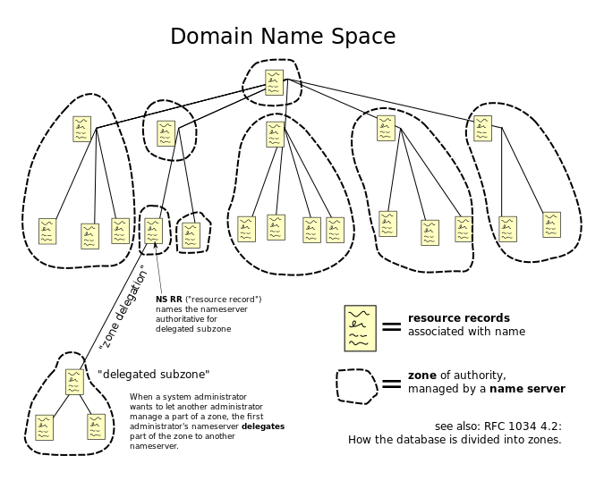
DNS names and DNS hierarchy - A typical DNS name has multiple words separated by periods. For example, www.google.com. Each word of the DNS name is handled by a different portion of the DNS hierarchy (different DNS Servers).
Walk the DNS tree - Resolving a DNS name into an IP address follows a process called "Walk the tree". It's critical that you understand this process: (image from Wikimedia)
{kind=link}
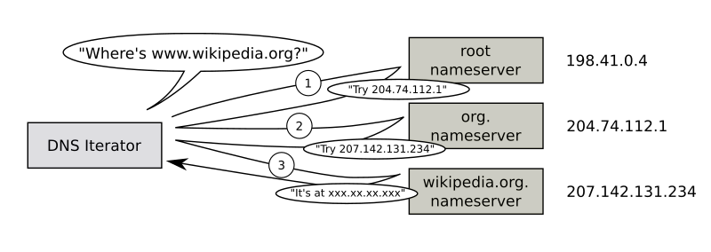
- Implicit period (root) - DNS names are read from right to left. At the end of www.google.com is an implicit period. So the last character of every fully qualified DNS name is a period (e.g. www.google.com.), which represents the top (root) of the DNS tree.
- Next is .com. The DNS recursive resolver sends a DNS Query to the parent Root DNS Servers asking for the IP Addresses of the DNS Servers that host the .com DNS zone.
- The DNS recursive resolver is configured with a hard coded list of DNS Root Server IP addresses, also called Root Hints.
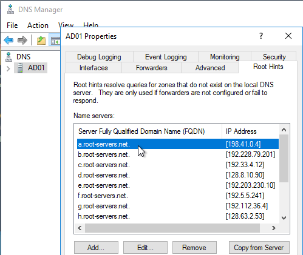
- The root DNS servers are usually owned and operated by government agencies, or large service providers.
- The root DNS Servers have a link (aka delegation or referral) to the .com DNS Servers.
- The DNS recursive resolver is configured with a hard coded list of DNS Root Server IP addresses, also called Root Hints.
- Next is google.com. The DNS recursive resolver sends a DNS Query to the parent .com DNS Servers asking for the IP Addresses of the DNS Servers that host the google.com DNS zone.
- The .com DNS Servers are usually owned and maintained by the Internet Domain Registrars.
- The .com servers have a link (aka delegation or referral) to the google.com DNS Servers.
- Finally, the DNS recursive resolver asks the google.com DNS Servers to resolve www.google.com into an IP address.
- The google.com DNS Servers can resolve www.google.com directly without linking or referring to any other DNS Server.
DNS Caching - Resolved DNS queries are cached for a configurable period of time. This DNS cache exists on both the Resolver/Recursive DNS Server, and on the DNS Client. The caching time is defined by the TTL (Time-to-live) field of the DNS record. When a DNS Client needs to resolve the same DNS name again, it simply looks in its cache for the IP address, and thus doesn't need to ask the DNS Resolver Server again.
- If two DNS Clients are configured to use the same Local DNS Servers/Resolvers, when a second DNS Client needs to resolve the same DNS name that the first DNS Client already resolved, the DNS Resolver Server simply looks in its cache and sends back the response and there's no reason to walk the DNS tree again, at least not until the TTL expires.
DNS is not in the data path - Once a DNS name has been resolved into an IP Address, DNS is done. The traffic is now between the user's client software (e.g. web browser), and the IP address. DNS is not in the data path. It's critical that you understand this, because this is the source of much confusion when configuring ADC GSLB.
FQDN - When a DNS name is shown as multiple words separated by periods, this is called a Fully Qualified Domain Name (FQDN). The FQDN defines the exact location of the DNS Name in the DNS tree hierarchy.
DNS Suffixes - But you can also sometimes just enter the left word of a DNS name and leave off the rest. In this case, the DNS Client will append a DNS Suffix to the single word, thus creating a FQDN, and send the FQDN to the DNS Resolver to get an IP address. A DNS Client can be configured with multiple DNS Suffixes, and the DNS Client will try each of the suffixes in order until it finds one that works.
- When you ping a single word address, ping will show you the FQDN that it used to get an IP address.
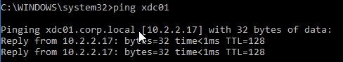
Authoritative DNS Servers - Each small portion of the DNS hierarchy/tree is stored on different DNS servers. These DNS servers are considered "authoritative" for one portion of the DNS tree. When you send a DNS Query to a DNS Server that has the actual DNS records in its configuration, the DNS Server will send back the IP Address and flag the DNS response as "authoritative". But when you send a DNS query to a DNS Resolver that doesn't have google.com's DNS records in its local database, the DNS Recursive Resolver will get the answer from google.com's DNS servers, and your local DNS Server flags the DNS Response as "non-authoritative". The only way to get an "authoritative" response for www.google.com is to ask the google.com's DNS servers directly.
- DNS Zones - The portion of the DNS tree hosted on an authoritative DNS server is called the DNS Zone. A single DNS server can host many DNS Zones. DNS Zones typically contain only a single domain name (e.g. google.com). If DNS records for both company.com and corp.com are hosted on the same DNS server, then these are two separate zones.
- Zone Files - DNS records need to be stored somewhere. On UNIX/Linux DNS servers, DNS records are stored in text files, which are called Zone Files. Microsoft DNS servers might store DNS records inside of Active Directory instead of in files.
DNS records - Different types of DNS records can be created on authoritative DNS servers:
- A (host) - this is the most common type of record. It's simply a mapping of one FQDN to one IP address.
- DNS Round Robin - If you create multiple Host records (A records) with the same FQDN, but each A record has a different IP address, then the DNS Server will round robin pick one of the IP Addresses for its DNS Response. Different DNS Queries will get different IP addresses in their DNS Response. This is called DNS Round Robin load balancing. One problem is that most DNS Servers do not know if the IP address is reachable or not.
- CNAME (alias) - this record aliases one FQDN into another FQDN. To get the IP address for a CNAME FQDN, get the IP address for a different FQDN instead. See below for details.
- NS (name server) - NS records are referrals to other DNS servers that are authoritative for a specified portion of the DNS hierarchy.
- To delegate a FQDN or DNS sub-zone to a different DNS Server, you create NS records in the parent zone.
- Create NS records when you need to delegate DNS resolution to Citrix ADC so Citrix ADC's GSLB feature can intelligently resolve DNS names to multiple IP Addresses.
Resolving a CNAME - While the DNS Resolver is walking the tree, a CNAME might be returned instead of an IP address. The CNAME response contains a new FQDN. The Resolver starts walking the tree again, but this time for the new FQDN. If the DNS Resolver gets another CNAME, then it starts over again until it finally gets an IP Address. The IP Address is returned in the DNS Response to the original DNS Query.
- Actual FQDN - The DNS Response also contains the actual FQDN that the IP address actually came from, instead of the original FQDN that was in the DNS Query.
- If you ping the original FQDN, ping shows you the CNAME'd FQDN.
- However, if a Web Browser performed the DNS Query, then the Web Browser ignores the CNAME'd FQDN and instead leaves the original FQDN in the browser's address bar. This means that DNS CNAME does not cause a Browser redirect.
- CNAMEs and Cloud - CNAMEs are used extensively in Cloud Web Hosting services. If you create a website on Azure Web Apps, Azure creates a DNS A record for the website but the A record FQDN is based on Azure's DNS suffixes, not your DNS suffix. If you want to use your own DNS suffix, then you create a CNAME from a FQDN using your DNS suffix, to the FQDN that Azure created.
Public DNS Zones - Public DNS names are hosted on publicly (Internet) reachable DNS Servers. The same companies that provide public website hosting also provide public DNS zone hosting.
Private DNS zones - Private DNS Zones are hosted on internal DNS Servers only. Private DNS zones are used extensively in Microsoft Active Directory environments to allow domain-joined machines to resolve each other's IP Addresses. Each Active Directory domain is a different Private DNS Zone. Private DNS zones are not resolvable from Public DNS Servers.
Private DNS Servers - When a private client (behind the firewall) wants to communicate with a private server, the private DNS Clients should send a DNS Query to a Private DNS Server, not to a public DNS Server. In Microsoft Active Directory environments, Domain Controllers are usually the Private DNS Servers.
- Private DNS Servers can resolve Public DNS names - When a private client wants to communicate with a server on the Internet, the private DNS Client sends the DNS Query for the public DNS name to a Private DNS Server. Private DNS Servers are recursive resolvers so they can walk the Internet DNS servers to resolve public DNS names too.
- For DNS Clients that need to resolve both Private DNS names and Public DNS names, configure the DNS Clients to only use Private DNS Servers. Do not add any Public DNS Server (e.g. 8.8.8.8) to the NIC's IP configuration. If you do, then sometimes the DNS Client might send a DNS Query for a Private DNS name to the Public DNS Server and it won't succeed.
- DNS Forwarding - if a Private DNS Server does not have access to the Internet, then the Private DNS Server can be configured to forward unresolved DNS Queries to a different Private (or public) DNS Server that is configured as a Recursive Resolver.
- DNS Tree Short Circuit - DNS Forwarding can short circuit DNS Tree walking. If a corp.com DNS server wants to resolve a company.com FQDN, then you can configure the corp.com DNS servers to forward all company.com FQDNs directly to a DNS Server that hosts the company.com DNS zone. This eliminates needing to walk the tree to find the company.com DNS Servers.
- DNS Forwarding for Private Zones - Walking the tree usually only works for public FQDNs since the root DNS servers are public DNS servers. If you have multiple private DNS zones on different private DNS Servers, you usually have to configure DNS forwarding for each of the private zones.
Split DNS - Since Public DNS and Private DNS are completely separate DNS Servers, you can host DNS Zones with the same name in both environments. Each environment can be configured to resolve the same FQDNs to different IP Addresses. If a Private DNS Client resolves a particular FQDN through a Private DNS Server, then the IP address response can be an internal IP address. If a Public DNS Client resolves the same FQDN through a Public DNS Server, then the IP address response can be a public IP address. Internal clients resolving FQDNs to internal IP addresses avoids internal clients needing to go through a firewall to reach the servers.
Physical Networking
Layer 1 (Physical cables)
ADC appliances connect to network switches using several types of media (cables).
- Gigabit cables are usually copper CAT6 twisted pair with 8-wire RJ-45 connectors on both sides.
- 10 Gigabit or higher bandwidth cables are usually fiber optic cables with SC connectors on both sides.
Transceivers (SFP, SFP+, QSFP+, SFP28)
- Transceivers convert optical to electrical and vice versa - To connect a fiber optic cable between two network ports, you must first insert a transceiver into the switch ports. The transceiver converts the electrical signals from the switch or ADC into optical (laser) signals. The transceiver then converts the laser signals to electrical signals on the other side.
- Transceivers are pluggable - just insert them.
- Switch ports and ADC ports only accept specific types of transceivers.
- Different types of transceiver -
- SFP transceivers only work up to gigabit speeds.
- For 10 Gig, you need SFP+ transceivers.
- For 40 Gig, you need QSFP+ transceivers.
- For 25 Gig, you need SFP28 transceivers
- For 100 Gig, you need QSFP28 transceivers
For cheaper 10 Gig+ connections, Cisco offers Direct Attach Copper (DAC) cables:
- Transceivers are built into both sides of the cable so you don't have to buy the transceivers separately.
- The cables are based on Copper Twinax. Copper means cheaper metal, and cheaper transceivers, than optical fiber.
- The cables are short distance (e.g. 5 meters). For longer than 10 meters, you must use optical fiber instead.
Port Channels (cable bonds)
Cable Bonding - Two or more cables can be bound together to look like one cable. This increases bandwidth, and increases reliability. If you bond 4 Gigabit cables together, you get 4 Gigabit of bandwidth instead of just 1 Gigabit of bandwidth. If one of those cables stops working for any reason, then traffic can still use the other 3 cables. (image from wikipedia)
{kind=link}
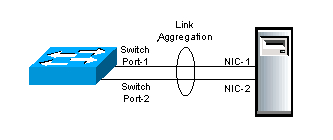
Cable Bonding does not impact network functionality - Cable bonding does not affect networking in any way. Ethernet and IP routing don't care if there's one cable, or if there are multiple cables bonded into a single link.
- However, if you connect multiple unbonded cables to the same VLAN, then Ethernet and IP routing see each unbonded cable as a separate connection and this will mess up your switching and routing designs. Don't connect multiple cables to one VLAN unless you bond those cables.
Various Names for Cable Bonding - On Cisco switches, cable bonding functionality has several names. Probably the most common name is "port channel". Other names include: "link aggregation", "port aggregation", "switch-assisted teaming", and "Etherchannel".
Bond Both Sides - to bond cables together, you must configure both sides of the connection identically. You configure the switch to bond cables. And you configure the ADC (or server) to bond cables.
- On ADC, the bonding feature is called Channel. On ADC, a Channel is represented by a new interface called LA/1 or something like that. LA = Link Aggregate. The 1 indicates the number of the Port Channel. An ADC can have multiple Port Channels (LA/1, LA/2, etc.), with each Channel configured for a different VLAN.
Cable Bonds have one MAC address - Each cable is plugged into a NIC port. Each NIC port has its own MAC Address. An IP Address can only be ARP'd to a single MAC address, which means the incoming traffic only goes to one of the cables. To get around this problem, when a port channel (bond) is configured, a single MAC address is shared by all of the cables in the bond, and both sides of the cable bond know that the single MAC address is reachable on all members of the cable bond.
- If you connect two unbonded cables from one ADC to the same VLAN, then each port/cable will have its own MAC address. When a router does an ARP for an IP address that is owned by the ADC, the ARP will reach the ADC on both cables, and ADC will respond using the MAC address of each interface. Sometimes the ARP response will be for one of the MAC addresses, and sometimes the ARP response will be for the other MAC address. This results in an error called "MAC Move" and is sometimes interpreted as an IP Conflict. To avoid this problem, always bond cables that are connected to the same VLAN so that both cables will have the same MAC address.
Load Balancing across the bond members - The Ethernet switch and the ADC will essentially load balance traffic across all members of the bond. There are several port channel load balancing algorithms. But the most common algorithm is based on source IP and destination IP; all packets that match the same source IP and destination IP will go down the same cable. Packets with other combinations of source IP and destination IP might go down a different cable. If you are bonding Gigabit cables, since a single source/destination connection only goes down one cable, it can only use up to 1 Gigabit of throughput. Bonds only provide increased bandwidth if there are many source/destination combinations.
LACP - Cables can be bonded together manually, or automatically. LACP is a protocol that allows the two sides (switch and ADC) of the bonded connection to negotiate which cables are in the bond, and which cables aren't. LACP is not the actual bonding feature; instead, LACP is merely a negotiation protocol to make bonding configuration easier.
Multi-switch Port Channels - Port Channels (bonds) are usually only supported between one ADC and one switch. To bond ports from one ADC to multiple switches, you configure something called Multi-chassis Port Channel. Multi-chassis refers to multiple switches. You almost always want multi-chassis since that lets your Port Channel survive a switch failure.
- Virtual Port Channel - On Cisco NX-OS switches, the multi-chassis port channel feature is called "virtual port channel", or vPC for short. When connecting a single ADC Port Channel to multiple Nexus switches, ask the network team to create a "virtual port channel".
- Stacked Switches - Other switches support a "stacked" configuration where multiple switches look like one switch. There are usually cables in the back of the switches that connect the switches together.
Port Channel Configuration - first, ask the switch administrator to create a port channel using multiple switch ports. The switch administrator can optionally enable LACP on the Channel. Then the ADC administrator can create a Channel on the ADC appliance.
- Create Manual Channel On ADC - if LACP is not enabled on the switch's port channel, then create a "manual" channel (without LACP). On the ADC, go to System > Network > Channels, create a channel, select the channel interface name (e.g. LA/2), and then add the member interfaces.
- Create LACP Channel on ADC - if LACP is enabled on the switch's port channel, then on the ADC, go to System > Network > Interfaces, double-click a member interface, scroll down, check the box to enable LACP, and enter a "key" (e.g. 1). All members of the same channel must have the same key. If you enter "1" as the key, then a new interface named LA/1 is created, where the "1" = the LACP key.
- On ADC, LACP is enabled on the interface, not the Channel. There's no need to manually create a Channel. The Chanel will be created automatically once you set the LACP Key on the member interfaces. After the Channel is automatically created on the ADC, you can Edit the Channel to see the member interfaces and make sure they are "distributing".
- The LACP "key" configured on the ADC does not need to match the port channel number on the switch side. ADC appliances typically have Channels named LA/1, LA/2, etc., while Switches can have port channel interfaces named po281, po282, etc.
VLAN tagging
VLAN review - Earlier I mentioned that switches can support multiple Ethernet subnets and each of these Ethernet subnets is a different VLAN. Each switch port is configured to belong to a particular VLAN. Ports in the same VLAN use Ethernet to communicate with each other. Ports in separate VLANs use routers to communicate with each other.
Multiple VLANs on one port - Switches can also be configured to allow a single switch port to be connected to multiple VLANs. An ADC usually needs to be connected to multiple subnets (VLANs). You can either assign each VLAN to a separate cable/channel, or you can combine multiple VLANs/subnets onto a single cable/channel.
VLAN tagging - If a single switch port supports multiple VLANs, when a packet is received by the switch port, the switch needs some sort of identifier to know which VLAN the packet is on. A VLAN tag is added to the Ethernet packet where the VLAN tag matches the VLAN ID configured on the switch.
- Tags are added and removed on both sides of the switch cable - The ADC adds the VLAN tag to packets sent to the switch. The switch removes the tag and switches the packet to other switch ports in the same VLAN. When packets are switched to the ADC , the switch adds the VLAN tag so ADC knows which VLAN the packet came from.
Trunk Port vs Access Port - When multiple VLANs are configured on a single switch port (or channel), this is called a Trunk Port. When a switch port (or channel) only allows one VLAN (without tagging), this is called an Access Port. Switch ports default as Access Ports unless a switch administrator specifically configures it as a Trunk Port. Access Ports don't need VLAN tagging, but Trunk Ports do need VLAN tagging. When you want multiple VLANs on a single switch port, ask the networking team to configure a Trunk Port.
- Trunk Ports and VLAN ID tagging - when a switch port is configured as a Trunk Port, by default, every VLAN assigned to that Trunk Port requires VLAN ID tagging. The ADC must be configured to apply the same VLAN ID tags that the switch is expecting.
- Trunk Ports and Native VLAN - One of the VLANs assigned to the Trunk Port can be untagged. This untagged VLAN is called the native VLAN. Only one VLAN can be untagged. Native VLAN is an optional configuration. Some switch administrators, for security reasons, will not configure an untagged VLAN (native VLAN) on a Trunk Port. If untagged VLANs are not allowed on the switch, then you must configure the ADC to tag every packet, including the NSIP. Configuring a Native VLAN on the trunk port simplifies some ADC configuration (especially NSIP and High Availability), as detailed later.
Trunk Ports reduce the number of cables - if you had to connect a different cable (or Port Channel) from ADC for each VLAN, then the number of cables (and switch ports) can quickly get out of hand. The purpose of Trunk Ports is to reduce the number of cables.
Trunk Ports and Port Channels are separate features - If you want to bond multiple cables together, then you configure a Port Channel. If you want multiple VLANs on a single cable or Port Channel, then you configure a Trunk Port. These are two completely separate features. Port Channels can be Access Ports.
Trunk Ports and Routing are separate features - Configuring a Trunk port with multiple VLANs does not automatically enable routing between those VLANs. Each VLAN on the Trunk Port is a separate Layer 2 Ethernet broadcast domain and they can't communicate with each other without routing. Routing is configured in a separate part of the Layer 3 switch, or on a separate router device. In other words, Trunk Ports are unrelated to routing.
Multiple NICs in one machine
A single machine (e.g. ADC appliance) can have multiple NIC ports with multiple connected cables.
Single VLAN/subnet does not need VLAN configuration on the ADC - if the ADC is only connected to one subnet/VLAN, then no special configuration is needed. Just create the NSIP, SNIP, and VIPs in the one IP subnet.
- You can optionally bond multiple cables into a Port Channel for redundancy and increased bandwidth.
Two or more NICs to one VLAN requires cable bonding - If two or more NIC ports are connected to the same VLAN, then the NIC ports must be bonded together into a Port Channel. Port Channels require identical configuration on the switch side and on the ADC side. If you don't bond them together, then you run the risk of bridging loops and/or MAC moves.
Multiple VLANs/subnets requires VLAN configuration on the ADC - if a ADC is connected to multiple IP subnets, then the ADC must be configured to identify which subnet is on which NIC port. Here's the configuration process:
- On the ADC, for each IP subnet, create a Subnet IP address (SNIP) with subnet mask for that subnet. If the ADC is connected to four IP subnets/VLANs, then you should have at least four SNIP addresses, one for each subnet.
- On the ADC, create a VLAN object for each IP subnet and bind each VLAN object to one network interface or Port Channel.
- The ADC's VLAN object asks for a VLAN ID number, and has a checkbox to indicate if the VLAN ID number is tagged or not.
- Bind a subnet IP address (SNIP) with subnet mask to each VLAN object so ADC knows which IP addresses are on which VLAN and by extension which network interface.
ADC VLAN objects are always required on a multi-subnet ADC, even if the switch does not need VLAN tagging - If an ADC is connected to two or more subnets, it doesn't matter if VLAN tagging is required by the switch or not; VLAN objects (and SNIPs) still must be defined on the ADC so the ADC knows which IP subnets go with which interfaces.
ADC VLAN Tagging - On the ADC, when you create a VLAN object, you specify a VLAN ID number. This VLAN ID number can be tagged or untagged.
- If the switch port is an access port that does not expect VLAN-tagged traffic, then the VLAN ID number entered on the ADC is only locally significant and doesn't have to match the switch's VLAN ID.
- It's easier to understand the networking configuration if the ADC's VLAN ID and the switch port's VLAN ID match.
- If the switch port is a Trunk Port, then there's a checkbox in the ADC's VLAN object to enable tagging for this VLAN ID number.
- The tagged VLAN ID number configured on the ADC's VLAN object must match the tagged VLAN number configured on the switch port.
- You can bind multiple ADC VLAN objects to a single ADC interface/channel that is connected to a switch trunk port
- Each ADC VLAN object bound to the same Trunk Interface must be tagged.
- Only one untagged ADC VLAN object can be bound to a Trunk Interface. The untagged VLAN will only work if the switch Trunk Port is configured with a native VLAN (untagged).
Routing table - When you create a SNIP/VLAN on a ADC, a "direct" connection is added to the routing table. You can view the routing table at System > Network > Routes. "Direct" means the ADC has a Layer 2 (ARP) connection to the IP Subnet.
One Default Route - the routing table usually has a route 0.0.0.0 that points to the Default Gateway/Router. There can only be one default route on a device even if that device is connected to multiple VLANs.. The ADC can send Layer 2 packets out any directly connected interface/VLAN, but Layer 3 packets only go out the one default route, which is on only one VLAN.
- Add Static Routes to override Default Route - To use a different router than the default router, you add static routes to the routing table. A static route is a combination of the destination subnet you are trying to reach, and the address of the Next Hop router that can reach that destination. The Next Hop router address must be on one of the VLANs that the ADC is connected to, and is usually a different router than the default router.
- A common use case for static routes is for an ADC appliance that is connected to both a DMZ subnet, and an internal subnet. The default router is usually a router in the DMZ that can route to the Internet. For internal networks, you add static routes for destinations to internal networks through an internal router as the next hop address.
How ADC Source IP is chosen - when a multi-subnet ADC wants to send a packet to a remote routed subnet (not directly connected), it does the following:
- The ADC looks in its routing table for the next hop address to reach the destination.
- The matching routing entry can be a static route, or it can be the default route.
- The ADC selects one of its SNIP addresses that is on the same subnet as the next hop router address.
- ADC looks in its VLAN configuration to determine the network interface that is connected to the router.
- The SNIP is bound to a VLAN object, which is bound to an interface or Channel.
- ADC does an ARP to get the router's MAC address.
- ADC puts a packet on the wire with the subnet's SNIP as the Source IP address and the router's MAC address as the Ethernet destination address.
- Router receives the packet and routes it to the destination machine (e.g. web server).
- The web server responds to the Source IP in the packet, which is the ADC's SNIP address.
- The web server sends the packet to its local default gateway, which routes the packet to the ADC's SNIP address.
ADC Networking
Traffic flow through ADC
ADC-owned IP addresses - ADCs have several types of owned IP addresses: Virtual IP (VIP), Subnet IP (SNIP), NetScaler IP (NSIP), and GSLB Site IP. When you create one of these types of IP addresses on an ADC, the ADC owns that IP, which means the ADC replies to ARP requests for those IP addresses. ADC-owned IP addresses cannot be configured on any other networking device.
- Non-ADC-owned IP addresses - When you configure an ADC to load balance web servers, you enter the IP addresses of the web servers so the ADC knows where to send the load balanced traffic. The web server IP addresses are not owned by the ADC.
- ADCs receive traffic destined to owned IP addresses. ADCs send traffic to non-owned IP addresses.
NSIP (NetScaler IP) is the ADC's management IP address. ADC administrators connect to the NSIP to manage the ADC appliance.
VIPs (Virtual IP) - VIPs receive traffic. When you create a Virtual Server (e.g. Load Balancing Virtual Server), you specify a Virtual IP address (VIP) that clients connect to.
- You also specify a port number for the Virtual Server to listen on. The ADC drops traffic that is not destined to the specified port number.
SNIPs (Subnet IP) - SNIPs are the Source IP addresses that ADC uses when ADC sends traffic to a web server. When ADC appliances need to send a packet, they look in the routing table for the next hop address and select a SNIP on the same subnet as the next hop. The Source IP address of the request packet is set to the SNIP. Web servers reply to the SNIP.
The following image is from the ADC Welcome Wizard when configuring a SNIP.
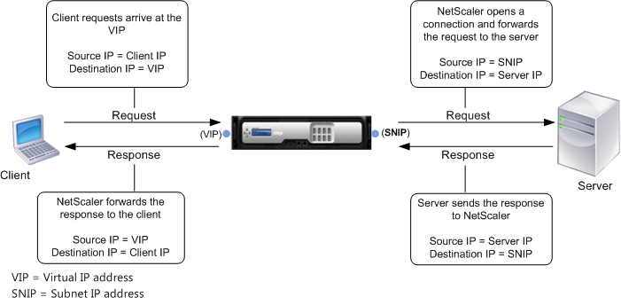
Load Balancing traffic overview - here's a simplified description of ADC Load Balancing:
- VIP/Virtual Server - Clients send traffic to a Load Balancing VIP.
- Services - Bound to the Load Balancing Virtual Server are one or more Load Balancing Services (or Service Group). These Load Balancing Services define the web server IP addresses and the web server port number. ADC chooses one of the Load Balancing services, and forwards the HTTP request to it.
- ADC replaces with the source IP with one of its SNIPs. The Web Servers reply to the SNIP.
- Monitors - ADC should not send traffic to a web server unless that web server is healthy. Monitors periodically send health check probes to web servers.
ADC Source IP and Logging
ADC SNIP replaces original Client IP - When ADC communicates with a back-end web server, the original source IP address is replaced with an ADC SNIP. The web server does not see the original Client IP address. This behavior is sometimes called Source NAT.
If SNIP is the source IP, how can web servers log the original Client IP? - Since web servers behind a ADC only see the ADC's SNIP, the HTTP request entries in the web server access logs (e.g. IIS log) all have the same ADC SNIP as the client IP. If the web server needs to see the real Client IP, then ADC provides three options:
- Client IP Header Insertion - when you create a Load Balancing Service on the ADC, there's a checkbox to insert the real client IP into a user-defined HTTP Header. This HTTP Header is typically named X-Forwarded-For, or Real IP, or Client IP, or something like that. The web server then needs to be configured to extract the custom HTTP header and log it. The packets on the wire still have an ADC SNIP as the Source IP.
- Use Source IP (USIP) - The default mode for ADC is Use Subnet IP (USNIP), which replaces the original Client IP address with ADC SNIP address. This mode can be changed to Use Source IP (USIP), which leaves the original Source IP (Client IP) in the packets. When web servers respond, they send the reply to the Client IP, and not to the ADC SNIP. If the Response does not go through the ADC , then ADC is only seeing half of the conversation, which breaks many ADC features. If you need USIP mode, then reconfigure the web server's default gateway to point to a ADC SNIP. When the web server replies to the Client IP, it will send the reply packet to its default gateway, which is a ADC SNIP, thus allowing ADC to see the entire conversation.
- USIP can be enabled globally for all new Load Balancing Services, or can be enabled on specific Load Balancing Services, so you can use SNIP for some web servers and USIP for others.
- If a web server's default gateway is an ADC SNIP, then all outbound traffic from web server, including general Internet traffic, will go through the ADC. The ADC must have a sufficient bandwidth license to handle this traffic.
- USIP tends to complicate ADC network configurations, so avoid it if you can.
- Direct Server Return (DSR) - An option similar to USIP is Direct Server Return (DSR). DSR does not need the web server to change its default gateway so reply traffic bypasses the ADC and doesn't eat up the ADC's bandwidth license. DSR is typically used for SMTP Load Balancing so SMTP Servers can filter messages based on real client IP addresses. However, DSR is a complicated configuration that requires the addition of loopback adapters to the destination servers.
ADC Forwarding Tables
ADC has at least three tables for choosing how to forward (route) a packet. They are listed below in priority order. MBF overrides PBR, which overrides routing table.
- Mac Based Forwarding (MBF) - MBF keeps track of which interface/router a client request came in on and replies out the same interface/router. Only works for replies and doesn't do anything for ADC-initiated connections. Since it overrides routing tables, MBF is usually discouraged.
- Policy Based Route (PBR) - Normal routing only uses destination IP to choose the next hop router. PBRs can choose a next hop address based on packet fields other than just Destination IP. These other packet fields include: source IP, source port, and destination port. PBRs are difficult to maintain and thus most networking people try to avoid them, but they are sometimes necessary (e.g. dedicated management network).
- Routing Table - the routes in the routing table come from three sources: SNIPs (directly connected subnets), manually-configured Static Routes (including default route), and Dynamic Routing (OSPF, BGP).
ADC networking configuration vs Server networking configuration
ADC networking is configured completely differently than server networking. ADC is configured like a switch, not like a server.
- Servers assign IPs to NICs - On servers, you configure an IP address directly on each NIC. Most servers only have one NIC.
- ADC appliances are configured like a Layer 3 Switch - On ADC appliances, you assign VLANs to interfaces, just like you do on a switch. Then you put ADC-owned IP addresses into each of those VLANs, which again, is just like a Layer 3 switch. More specifically, you create VLAN objects, bind the VLAN to an interface/channel, and then bind a SNIP to the VLAN.
ADC VLAN Design
ADC VLAN Options:
- VIP VLANs - The ADC must be Layer 2 connected to any VLAN that hosts ADC VIPs (Load Balancing VIPs, Citrix Gateway VIPs, etc.)
- Security zones - Ideally, an ADC's VIPs should only be hosted in one security zone (e.g. DMZ only). If you need to host VIPs in multiple security zones (e.g. both DMZ and internal), then you should acquire separate ADC appliances for each security zone.
- Route Partitioning - Citrix ADC has several technologies that can split the ADC's single routing table into multiple routing tables. These features include: Traffic Domains, Administration Partitioning, Net Profiles, and ADC SDX multi-tenant appliances. However, each of these features has cons. See the Firewalls section below for details.
- Dedicated management VLAN? - Dedicated management VLAN means that only the ADC NSIP (management IP) is placed on this VLAN. Don't put any VIPs on this management VLAN. Don't put any SNIPs on this management VLAN. If no VIPs or SNIPs, then the management VLAN cannot be used for incoming or outgoing data traffic (e.g. load balancing traffic).
- Citrix ADC does not have a true management interface - a management interface should have its own default gateway/route that is separate from the data plane's default route. And there should be no possibility of data traffic ever going out the management interface. Unfortunately, Citrix ADC does not support this. Alternatively, we can configure PBRs or MBF to simulate a dedicated management network, but be aware that this is simply configuration and is not enforced in hardware. For details, see Dedicated Management Subnet (PBRs).
- Server VLANs - If the ADC can route from a VIP VLAN to the web servers, then there's usually no need to connect the ADC directly to the web server VLANs. Most core routing is performed at wire speed so there's no performance benefit to connecting the ADC to the server VLANs.
- Advanced load balancing configurations like Use Source IP (USIP) and Direct Server Return (DSR) do require the ADC to be connected directly to the server VLANs.
- Security zones - if the VIPs are hosted in a DMZ VLAN, and if you connect the ADC directly to an internal server VLAN, then there is very high risk of bypassing a firewall. Client traffic reaches the ADC through the VIPs. The ADC uses an internal SNIP to communicate with the web servers. The VIP and the SNIP are in two different security zones.
ADC Physical Connectivity
Interface 0/1 is only for management - Dedicated management VLANs are usually connected to interface 0/1 on the ADC . If you don't have a dedicated management VLAN, then don't use interface 0/1 on physical ADC appliances and instead, use interfaces 1/1 and higher. That's because interface 0/1 is not optimized for high-throughput traffic.
One subnet for everything? - if the ADC is only connected to a single subnet, then the NSIP, VIPs, and SNIP will all be on one VLAN.
- Connect two or more of the non-0/1 interfaces to two or more switches. Don't connect anything to the 0/1 interface.
- Bond the two data interfaces into a port channel (preferably multi-switch port channel). For configuration details, see Port Channels on Physical ADC.
- Configure the switch's port channel as an access port with a single VLAN.
- On the ADC, there's no need for any VLAN configuration.
Dedicated Management VLAN? - One option is to configure the management VLAN on its own Gigabit cable connected to the 0/1 interface on the ADC. The switch port should be an access port for the management VLAN.
Another option is to add the management VLAN to a trunk port.
- The trunk port can be 10 Gig or higher instead of limited to the Gigabit of interface 0/1. And the trunk port is usually a port channel.
- Can the switch trunk port be configured with the management VLAN as the native VLAN (untagged)? If so, this simplifies the ADC NSIP and ADC High Availability configuration.
- If the management VLAN is tagged, then Citrix ADC requires NSVLAN configuration and tagging of High Availability heartbeat packets.
NSIP is special - NSIP (the management IP) lives in VLAN 1. If you don't need to tag the management VLAN, then leave NSIP in VLAN 1. VLAN 1 on the ADC does not need to match any VLAN configured on the switch because you're not tagging the NSIP packets with the VLAN ID. When you bind untagged VLANs to ADC interfaces, those interfaces are removed from VLAN 1 and put in other VLANs. The remaining interface in VLAN 1 is your management interface.
- NSVLAN - if your management VLAN is tagged, then normal VLAN tagging configuration won't work for the NSIP VLAN. Instead, you must configure NSVLAN to tag the NSIP/management packets with the VLAN ID. All other VLANs are configured normally.
Link Redundancy - for each VLAN, connect at least two cables, preferably to different switches, and then bond the cables together into a port channel.
- Trunk Port - You can create a separate port channel for each VLAN. Or you can combine multiple VLANs onto the same port channel by configuring a Trunk Port.
- LACP - if your port channels have LACP enabled on the switch, then on the ADC go to System > Network > Interfaces, edit two or more member interfaces, check the box for LACP, and enter the same LACP Key. If you enter 1 as the key, then a channel named LA/1 is created.
- For manual port channels, go to System > Network > Channels, add a channel, select LA/1 or similar, and bind the member interfaces.
Disable unused Interfaces - if a ADC interface (NIC) does not have a connected cable, then disable the interface (System > Network > Interfaces, right-click an interface, and Disable). If you don't disable the unused interfaces, then High Availability (HA) will think the interfaces are down and thus failover.
ADC VLAN Configuration
SNIPs - every VLAN needs a VLAN-specific SNIP address, except the dedicated management VLAN. If you don't put a SNIP on the dedicated management VLAN, then the dedicated management VLAN should not be used for outbound traffic.
- One subnet - If the ADC is only connected to one subnet, then you only need one SNIP for the entire appliance, and there's no need to perform any ADC VLAN configuration.
NSIP VLAN - if your NSIP VLAN (management VLAN) is untagged, then you do not need to create a VLAN object for the NSIP VLAN since the ADC is already configured with VLAN 1.
- If your NSIP VLAN is also used for data traffic, then create a SNIP in the NSIP VLAN.
- If your NSIP VLAN needs to be tagged, then configure NSVLAN instead of the normal VLAN configuration.
VLANs - If the ADC is connected to multiple VLANs:
- Create a SNIP for each VLAN (except the dedicated management VLAN).
- Create a VLAN object for each VLAN (except the NSIP VLAN), and specify the same VLAN ID as configured on the switch.
- It doesn't matter if the VLAN is tagged or not, you still must create a separate ADC VLAN object for each subnet.
- Bind a VLAN object to one interface or channel.
- If the switch needs the VLAN to be tagged, then check the box to tag the packets with the specified VLAN ID.
- Bind the VLAN object to the SNIP for that VLAN.
Static Routes - Add static routes for internal subnets through an internal router on a "data" VLAN (not the dedicated management VLAN).
NSIP Replies - do not adjust the default route of the appliance until you configure the appliance to route NSIP replies properly. When an administrator connects to the NSIP to manage the appliance, the administrator was probably routed through a router on the NSIP VLAN. If you change the appliance's default router to a DMZ router, then NSIP replies will go out the Internet and will never make it back to the administrator. ADC has a few options for routing these NSIP replies correctly.
- NSIP is not on a dedicated management VLAN - in this case, the NSIP is on one of the data VLANs and you should already have static routes for internal destinations through a router on the internal data VLAN.
- NSIP is on a dedicated management VLAN - the static routes for internal IP addresses result in NSIP replies going out the wrong interface, resulting in asymmetric routing. Or the ADC might not be connected to an internal VLAN and thus the NSIP replies go out the default DMZ (Internet-facing) router. To handle this scenario, configure one of the following on the ADC:
- Policy Based Route - Configure a Policy Based Route (PBR) that looks for NSIP as Source IP and uses a management VLAN router as the next hop. Only packets with NSIP as source will go out the management VLAN router. All other packets will use the appliance's routing table to look up the next hop address.
- NSIP as source IP - some ADC features use NSIP as the source IP. These ADC features include: NTP, SNMP, Syslog, etc. PBRs properly route this NSIP-sourced traffic too.
- Mac Based Forwarding (MBF) - MBF records which interface a packet came in on, and replies out the same interface, bypassing the routing table.
- MBF is easy to configure, but MBF doesn't do anything for the ADC features that initiate connections using NSIP as the source IP.
- Policy Based Route - Configure a Policy Based Route (PBR) that looks for NSIP as Source IP and uses a management VLAN router as the next hop. Only packets with NSIP as source will go out the management VLAN router. All other packets will use the appliance's routing table to look up the next hop address.
Change Default Route to DMZ router - The Default Router should be on a data VLAN (e.g. DMZ VLAN) and not on the NSIP VLAN. Now that NSIP replies and Static Routes are configured, you can probably safely delete the default route (0.0.0.0) and recreate it without you losing connection to the NSIP.
- For configuration details, see ADC Multiple Subnets / Multiple VLANs
Layer 2 Troubleshooting - To verify VLAN connectivity, log into another device on the same VLAN (e.g. router/firewall) and ping the ADC SNIP or NSIP. Immediately check the ARP cache to see if a MAC address was retrieved for the IP address. If not, then layer 2 is not configured correctly somewhere (e.g. wrong VLAN configuration), or there's a hardware failure (e.g. bad switch port).
Layer 3 Troubleshooting - There are many potential causes of Layer 3 routing issues. A common problem is incorrect Source IP chosen by the ADC. To see the Source IP, SSH to the ADC's NSIP, run shell, and then run nstcpdump.sh host
ADC High Availability (HA)
HA Pair - You can HA pair two identical ADC appliances. The two appliances must be identical hardware, identical firmware version, and identical licensed edition.
HA and ARP - In an HA pair, each node has its own NSIP, but all of the other ADC-owned IP addresses float between the two appliances. More specifically, when there are ARP requests for VIPs and SNIPs, the primary appliance replies with its MAC addresses, but the secondary appliance does not reply to ARP requests. After an HA failover, the former secondary appliance starts responding to VIP and SNIP ARP requests with its MAC addresses, and the former primary appliance stops responding to ARPs.
- ARP Caching and Gratuitous ARP (GARP) - When an HA pair fails over, the new primary appliance performs a Gratuitous ARP. GARP tells routers to update their ARP cache to map IP addresses to the new appliance's MAC address instead of the old appliance's MAC address.
- Some routing devices (e.g. firewalls) will not accept GARP packets, and instead will wait for the ARP cache entry to time out. Or the router/firewall might not allow the IP address to move to a different MAC address. If HA failover stops all traffic, then work with the router/firewall admin to troubleshoot GARP and ARP cache.
HA monitored interfaces:
- Disable unused interfaces - All network interfaces on ADC by default have HA monitoring enabled. If any enabled interface is down (e.g. cable not connected), then HA will failover. Disable the unused interfaces so HA won't monitor them any more.
- Disabling unused interfaces also stops the flashing of the front LCD.
- Port Channels and HA failover - A port channel has two or more member interfaces. If one of the member interfaces is down, should the appliance failover? How many member interfaces must fail before HA failover should occur? On ADC, double-click the channel and you can specify a minimum throughput. If bonded throughput falls below this number due to member interface failure, then HA fails over.
- HA Fail Safe - If at least one interface is down on both HA nodes, then both HA nodes will be unhealthy and both nodes will stop responding. You can enable HA Fail Safe so that at least one of the HA nodes will be up, even if both nodes are unhealthy.
HA heartbeat packets are untagged - Each node in a HA pair sends heartbeat packets out all interfaces. These heartbeat packets are untagged. If the switch does not allow untagged packets (i.e. no native VLAN on a Trunk Port), then some special configuration is required.
- On ADC, for each Trunk interface/channel, turn off tagging for one VLAN. Don't worry about the switch configuration. Just do this on the ADC side.
- On ADC, go to System > Network > Interfaces (or Channels), double-click the interface/channel, and enable Tag All VLANs. The VLAN you untagged in step 1 will now be tagged again. As a bonus, HA heartbeat packets will also be tagged with the same VLAN ID you untagged in step 1.
- To verify that HA heartbeats are working across all interfaces, SSH to each ADC node, and run show ha node. Look for "interfaces on which HA heartbeat packets are not seen". There should be nothing in the list.
Firewalls
DMZ - public-facing ADC VIPs should be on a DMZ VLAN that is sandwiched between two firewalls. That means the public-facing ADC must be connected to the DMZ VLAN.
- Firewalls can route - When you connect a ADC to a DMZ VLAN, the firewall is usually the router.
- NAT - Most DMZ VLANs use private IPs (10.0.0.0/8, 172.16.0.0/20, 192.168.0.0/16) instead of public IPs. These private IP addresses are not routable across the Internet. To make the VIPs accessible to the Internet, a firewall NATs a company-owned public IP to the private DMZ IP. Ask the firewall administrator to configure the NAT translations for each publicly-accessible DMZ VIP.
- ADC VIPs listen on specific port numbers - the public-facing firewall only needs to allow specific port numbers to reach the public-facing VIPs. For web server load balancing, these ports are usually TCP port 80 and TCP port 443, and sometimes UDP 443.
Internal VIPs - internal VIPs (accessed by internal users) should be on an internal VLAN (not in the DMZ).
Multiple security zones - If you connect a single ADC to both DMZ and Internal, here's how the traffic flows:
- Clients connect to DMZ VIPs, which goes through the firewall that separates the Internet from the DMZ.
- ADC internal SNIP connects to internal server. Since the ADC is connected directly to the Internal network, ADC will use an internal SNIP for this traffic. If you have a firewall between DMZ and internal, that firewall has now been bypassed.
Separate ADC appliances for DMZ and internal - Bypassing the DMZ-to-internal firewall is usually not what security teams want. Ask your Security team for their opinion on this architecture. A more secure approach is to have different ADC appliances for DMZ and internal. The DMZ appliance is connected only to DMZ (except dedicated management VLAN). When the DMZ ADC needs to communicate with an internal server, the DMZ ADC uses a DMZ SNIP to send the packet to the DMZ-to-internal firewall. The DMZ-to-internal firewall inspects the traffic, and forwards it if the firewall rules allow. The firewall rule allows the DMZ SNIP to talk to the web server, but the firewall does not allow client IPs (on the Internet) to talk directly to the web server.
Traffic Isolation - ADC has some features that can isolate/partition traffic so that the ADC traffic stays in its security zone.
- Net Profiles - Net Profile selects a particular SNIP to be used by a Virtual Server, or Service, for traffic to back-end servers.
- If your appliance has multiple SNIPs, create a Net Profile for each SNIP. Then bind the Net Profiles to Virtual Servers and/or Services.
- Firewalls can permit different SNIPs to access different web servers. The firewall can allow one Virtual Server with one Net Profile to access specific internal servers, and the firewall can allow a different Virtual Server with a different Net Profile to access a different set of internal servers. The list of accessible servers for each SNIP is enforced at the firewall. However, it's the ADC administrator's responsibility to ensure that each Virtual Server has the correct Net Profile assigned.
- If your ADC has multiple SNIPs on one VLAN that can reach a web server, then ADC will round robin across those SNIPs, which is very annoying for firewall configuration. It's not possible to tell ADC to not use a SNIP unless that SNIP is in a Net Profile. To stop the round robin behavior, you must quickly assign Net Profiles (each with one SNIP) to every Virtual Server on the ADC appliance.
- Traffic Domains - Citrix ADC supports Traffic Domains, which are similar to Cisco VRF (Virtual Route Forwarding). Traffic Domains split an ADC into multiple routing tables, which theoretically can prevent traffic from one security zone from crossing into another security zone.
- However, not every ADC feature works in a Traffic Domain. Notable missing ADC features include: Citrix Gateway, AAA authentication, and Web App Firewall. See Supported Citrix ADC Features in Traffic Domains at Citrix Docs.
- Administrative Partitions - you carve up an MPX/VPX appliance into different administrative partitions, with each partition having access to a subset of the hardware. Each partition is essentially a separate ADC config, which means separate routing tables. VLANs can be dedicated to a partition, or VLANs can be shared across multiple partitions.
- However, not all ADC features work in a partition. See Supported Citrix ADC configurations at Citrix Docs.
- ADC SDX - SDX appliances carve up physical hardware into multiple virtual machines. Each VM is a full ADC VPX, each with its own configuration and own partitioned hardware (dedicated CPU, Memory, and NICs). There are no ADC feature limitations.
Network firewall (Layer 4) vs ADC Web App Firewall (Layer 7) - Most network firewalls only filter on port numbers and IP addresses, meaning that Layer 4 firewalls usually don't inspect the traffic and instead simply permit traffic that is destined to specific port numbers.
HTTP Content Inspection - As you read earlier, HTTP is a file transfer protocol. Sometimes file uploads contain malicious content (e.g. viruses), or file downloads contain private content (e.g. credit card numbers). You probably want a firewall that can block malicious HTTP traffic. Layer 4 firewalls do not inspect the HTTP traffic and thus a Layer 4 firewall cannot protect your websites. That leaves website security as a responsibility of the web server administrator and developer.
Web App Firewalls - Layer 7 firewalls, also called Web App Firewalls (WAF), can inspect HTTP traffic and block HTTP packets that match string patterns. These matching string patterns usually come from a signature rules list.
- Signatures - some string patterns should always cause an HTTP Request to be blocked every time the string pattern is seen in an HTTP Request. These malicious string patterns come from security firms that have identified hackers using these strings to exploit vulnerabilities in web server software. Snort is a popular provider of these string patterns.
- OWASP Top 10 Security Checks - Web App Firewalls have additional protections for the OWASP Top 10 Most Critical Web Application Security Risks. These include: SQL Injection, Cross Site Scripting, Forceful Browsing, Buffer Overflows, etc. A WAF can block any HTTP Packet that matches these security risks, however, these blocks might break a web application's functionality. In that case, WAF can either disable a signature rule, or relax a protection category for specific URLs.
- Learning Mode and Relaxations - WAFs have a Learning mode where they log all HTTP traffic that would have been blocked by protection rules. The learned violations for specific URLs can be deployed as firewall relexations, just like you would permit a port number through a Layer 4 firewall. Any relaxation places the onus of security on the web server instead of on the WAF.
Citrix ADC WAF - Citrix ADC Premium Edition has a WAF feature. Here's a brief configuration summary:
- Configure the web site traffic to flow through an ADC Load Balancing Virtual Server.
- Create an ADC WAF Signatures Object based on Snort rules.
- Create an ADC WAF Profile and enable various HTTP and XML security checks.
- Enable security check Learning Mode.
- Create an ADC WAF Policy for the WAF Profile and then bind the WAF Policy to the Load Balancing Virtual Server.
- Send test traffic through the Load Balancing Virtual Server so the ADC can learn the WAF violations.
- Review the list of learned violations and deploy the legitimate ones as WAF relaxations. Test again.
- After testing, reconfigure the WAF Profile to enable enforcement. WAF will start blocking malicious HTTP traffic.
Put network firewalls in front of ADC - ADC is not designed as a Layer 4 firewall like a Cisco ASA, Check Point, or Palo Alto. Thus you should always put a network firewall in front of your ADC, even if you enabled the ADC WAF feature.